Syllabus Topics
- 4.1 Activities and techniques used in road construction
- 4.2 Road construction equipment and plants
- 4.3 Preparation of sub-grade: Excavation, fill and compaction
- 4.4 Mass Haul diagram
- 4.5 Granular, water bound macadam, soil stabilized sub base and base course
- 4.6 Prime coat and tack coat
- 4.7 Sand seal and slurry seal
- 4.8 Bituminous surface and base course: Surface dressing, grouted or penetration macadam
- 4.9 Bituminous premixes (Dense bituminous macadam; Bituminous concrete)
- 4.10 Cement concrete pavement and joints in cement concrete pavement
- 4.11 Concept on the construction of recycled pavement
4.1 Activities and techniques used in road construction20752072
Past Exam Questions on this Topic
- What are the various activities involved in road construction? Write the plants and equipment required for bituminous and cement concrete road constructions (2075 Chaitra, Q7)
Solution
Activities involved in road construction (Manual §3.2):
Group Activities Earthwork Site clearance; earthwork in filling for embankment; excavation for cutting; excavation for borrow pits; excavation for structural foundations; disposal of surplus earth Drainage works Side drains, culverts, sub-surface drains, causeways, minor bridges and other water-management structures Protection / structural works Earth-retaining structures, gully control, landslide stabilisation, river training, bridge protection, bio-engineering Pavement works Sub-grade preparation, sub-base course, base course, wearing course Miscellaneous works Road furniture, road ancillaries, traffic signs / signals / markings Tools, equipment and plants used in road construction (Manual §3.3):
Category Items Tools (labour-based work) Shovel, spade, pick, chisel, hand rammer, trowel, brushes, wheelbarrow Earth-moving equipment Bulldozer / angle dozer, scraper, loader, excavator, backhoe, dragline, clamshell, trench digger Compaction equipment Smooth-wheeled roller, vibratory roller, pneumatic-tyred roller, sheep-foot roller, plate compactors and rammers Levelling equipment Motor grader Paving equipment Binder storage tank with heating device, bitumen distributor (sprayer), aggregate/chip spreader, concrete mixer, bituminous mechanical paver, concrete paver Lifting equipment Backhoe and loader (light loads), cranes Transport equipment Dumper trucks (tippers), flat-body trucks, mini dumpers Miscellaneous Rock drillers, drilling machines, water tanker Plants Cement-concrete (batching) plant, asphalt/hot-mix plant, cold-mix plant, aggregate crushing plant, screening plant, washing plant For a bituminous road the key items are the hot-mix plant, bitumen distributor, chip spreader, mechanical paver, tippers, and smooth-wheeled + pneumatic rollers. For a cement-concrete road they are the batching & mixing plant, transit/truck mixers, concrete paver-finisher, needle (poker) vibrators, screed/float, joint-cutting machine, and curing equipment.
Manual.pdf §3.2 and §3.3, book pp.206-208; Lecture 22-24 (§4.1-4.2 of these notes).
- What are the various activities involved in road construction? Explain the construction procedure of otta seal (2072 Chaitra, Q7)
Solution
Activities involved in road construction (Manual §3.2):
Group Activities Earthwork Site clearance; earthwork in filling for embankment; excavation for cutting; excavation for borrow pits; excavation for structural foundations; disposal of surplus earth Drainage works Side drains, culverts, sub-surface drains, causeways, minor bridges and other water-management structures Protection / structural works Earth-retaining structures, gully control, landslide stabilisation, river training, bridge protection, bio-engineering Pavement works Sub-grade preparation, sub-base course, base course, wearing course Miscellaneous works Road furniture, road ancillaries, traffic signs / signals / markings Otta seal is a bituminous surface treatment made by placing a layer of graded aggregate (not single-sized as in ordinary surface dressing) on a thick application of a relatively soft bituminous binder; the binder is drawn up through the aggregate by rolling and by traffic, producing a flexible mosaic. It is the standard low-cost surfacing for Nepalese district roads.
Materials — hard, strong, durable graded aggregate with aggregate impact value ≤ 30%, Los Angeles abrasion ≤ 40%, flakiness index ≤ 30%, plasticity index < 5%, graded as per specification; binder MC 3000 or MC 800 cutback bitumen.
Equipment — bitumen distributor, storage tank with heating device, chip/aggregate spreader, pneumatic-tyred roller and mechanical broom.
Construction steps
- Remove dust and foreign matter from the base with a mechanical broom / hand brushes and an air compressor.
- Apply the prime coat at the specified rate.
- Spray the bituminous binding agent generously over the prepared surface with the distributor.
- Spread the graded aggregate uniformly with an aggregate spreader.
- Roll with a pneumatic-tyred roller to embed and realign the chippings and to start drawing the binder up through the aggregate.
- Because of the fines in the aggregate, two or three days of rolling or of traffic are needed for the binder to coat all the particles.
- During the first few weeks the aggregate dislodged by traffic is swept back into the wheel paths.
- After about three weeks the surface is swept with a mechanical broom to remove all loose aggregate.
- For a double Otta seal, the second layer is constructed in the same way two to three months after the first.
Manual.pdf §3.2 (book p.206) and §3.8 — Construction of Otta seal (book p.219).
Road Construction Technology
A branch of engineering that deals with
- All activities for changing existing ground to the desired shape and slope
- Providing all necessary facilities for traffic operation
- Reconstruction/Maintenance of existing roads
Activities and Techniques Used in Road Construction
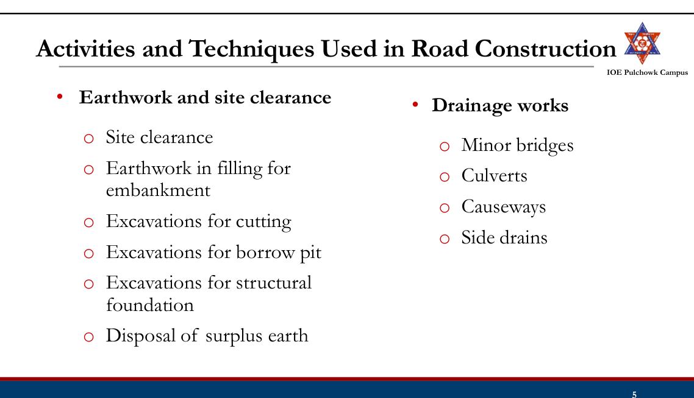
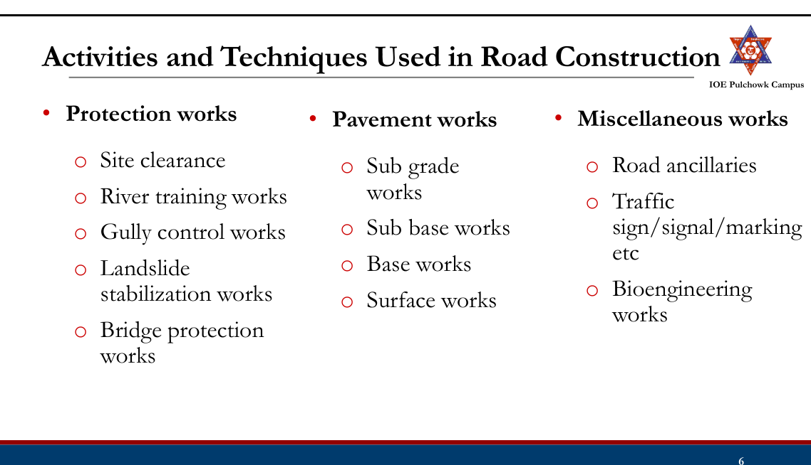
4.2 Road construction equipment and plants2080
Past Exam Questions on this Topic
- What are the equipment and plants needed for the various activities of road construction? Write down the material and construction procedure of DBSD. [8] (2080 Bhadra, Q8)
Solution
Tools, equipment and plants used in road construction (Manual §3.3):
Category Items Tools (labour-based work) Shovel, spade, pick, chisel, hand rammer, trowel, brushes, wheelbarrow Earth-moving equipment Bulldozer / angle dozer, scraper, loader, excavator, backhoe, dragline, clamshell, trench digger Compaction equipment Smooth-wheeled roller, vibratory roller, pneumatic-tyred roller, sheep-foot roller, plate compactors and rammers Levelling equipment Motor grader Paving equipment Binder storage tank with heating device, bitumen distributor (sprayer), aggregate/chip spreader, concrete mixer, bituminous mechanical paver, concrete paver Lifting equipment Backhoe and loader (light loads), cranes Transport equipment Dumper trucks (tippers), flat-body trucks, mini dumpers Miscellaneous Rock drillers, drilling machines, water tanker Plants Cement-concrete (batching) plant, asphalt/hot-mix plant, cold-mix plant, aggregate crushing plant, screening plant, washing plant For a bituminous road the key items are the hot-mix plant, bitumen distributor, chip spreader, mechanical paver, tippers, and smooth-wheeled + pneumatic rollers. For a cement-concrete road they are the batching & mixing plant, transit/truck mixers, concrete paver-finisher, needle (poker) vibrators, screed/float, joint-cutting machine, and curing equipment.
Double Bituminous Surface Dressing (DBSD) — materials and construction
Surface dressing = a thin bituminous surface treatment in which a bituminous binder is sprayed on the prepared base and immediately covered with single-sized stone chippings which are then rolled in. It provides a waterproof, dust-free, skid-resistant wearing surface and protects the base from abrasion, but adds no structural strength.
- SBST — Single Bituminous Surface Treatment (one binder + one chipping application).
- DBST / DBSD — Double Bituminous Surface Treatment / Double Bituminous Surface Dressing (two successive applications, the second with about half the binder and half the chipping size).
Materials: bitumen of grade 80/100 or 180/200 (or a cationic emulsion); cover aggregate with Los Angeles abrasion < 35%, aggregate impact value < 30%, flakiness index < 25% and water absorption < 1%.
Equipment: bitumen heating/storage unit, bitumen distributor (sprayer), chip spreader, 5-8 t smooth-wheeled or pneumatic-tyred roller, and mechanical brooms.
Construction procedure (SBST)
- Clean the existing surface with mechanical brooms and repair pot-holes, ruts and depressions.
- Apply the prime coat at the specified rate if the base is pervious, and cure it for at least 24 hours with no traffic.
- Spray the bitumen uniformly from the distributor at the design rate.
- Spread the cover aggregate of uniform gradation before the binder sets.
- Roll with a pneumatic-tyred roller (starting from the edges, moving to the centre, overlapping one-third of the roller width) to press the chippings into the binder.
- Sweep off the excess chippings within 24-48 hours and open to traffic.
Construction procedure (DBST / DBSD) — carry out a complete SBST as above; sweep away the loose aggregate; apply a second binder application of about one-third to one-half of the first; spread aggregate about half the size of the first application; roll with a pneumatic-tyred roller; and again broom off the excess within 24-48 hours.
Quality control: binder temperature; aggregate tests (LAA, impact value, flakiness index, plasticity index); gradation; rate of application of binder and aggregate; and binder tests (penetration, viscosity, ductility).
Manual.pdf §3.3 (book p.207) and §3.7 (book p.218); Lecture 22-24 §4.8.
Tools
- A simple piece of equipment used to perform a specific task in construction.
- Most tools are designed to be operated by hand.
- Tools are essential for labor-based construction, where the majority of work is carried out manually.
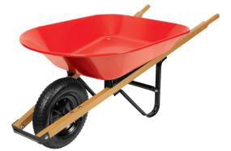
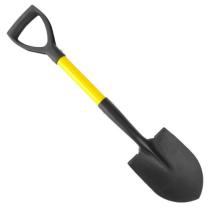
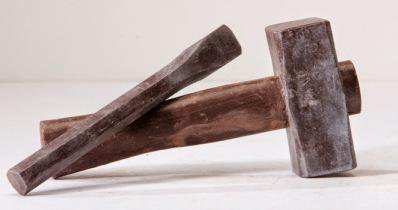
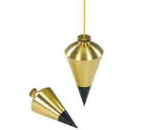
Wheelbarrow
Shovel
Chisel and Hammer
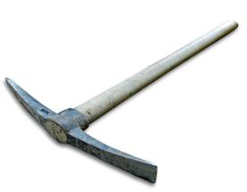
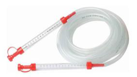
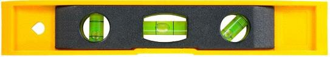
Pick-Axe
Level Pipe (Water pipe)
Spirit Level
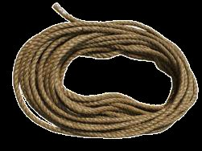
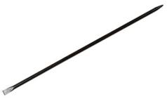
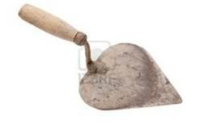
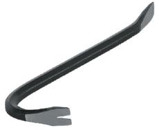
Crowbar
Trowel
String line
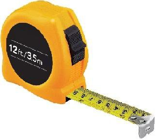
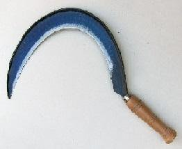
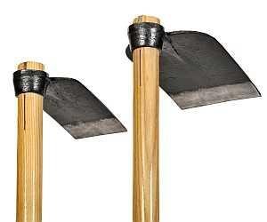
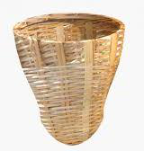
Equipments
- All appliances for the execution, completion, operation or maintenance of the road work, but which will not become a permanent part.
- Used for executing complex tasks in even the most unfavorable topography
- 15% to 40% of total project cost
Equipments: Earth Moving
- Earth-moving (Excavating) equipment covers a broad range of machines that can excavate soil and rock
- Earth movers help to speed not only earth work but also materials handling, demolition, and construction
- Examples: Dozers, Scrapers, Loader, Excavators, Backhoe, Dragline, Clamshell
Dozers: Used for shallow excavation, hauling the earth for short distance, pushing earth and uprooting trees. Bulldozer, Angle dozer, Tree dozer
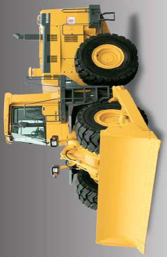
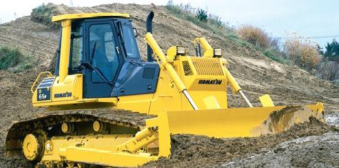
Scraper: Attached to tractor and is used for scraping, carrying and spreading of the earth on site.
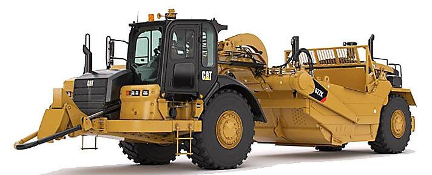
Loader: Primarily used to load materials (such as debris, gravel, rock sand etc.) into another type of machinery such as dump truck).
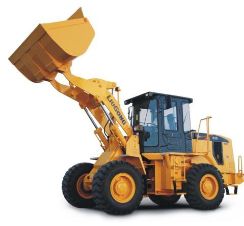
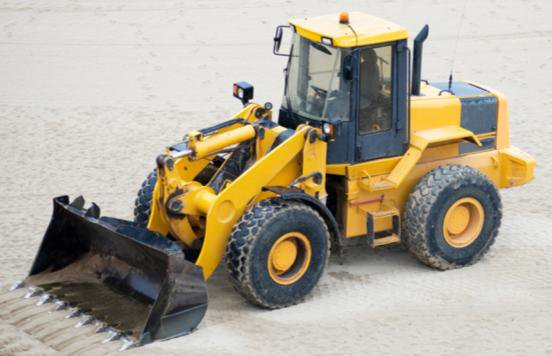
Excavator: A heavy machine used for digging, trenching, pipe laying, cleaning ditches and loading soil. It consists of a boom, stick, bucket, rotating cab (house), and an undercarriage with tracks or wheels.
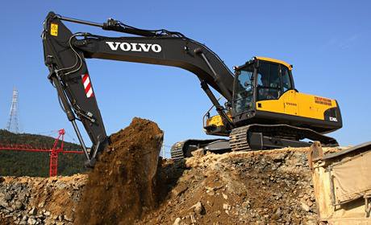
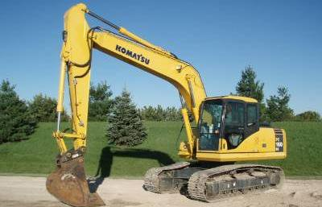
Image:Komatsu PC160LC-7KA Hydraulic Excavator.jpg
Backhoe Loader: An excavator which draws towards itself the rear end bucket attached to a hinged boom. Used for digging and loading materials.
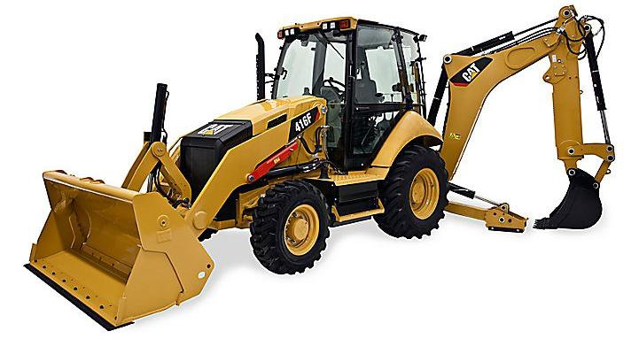
Dragline: Heavy machine
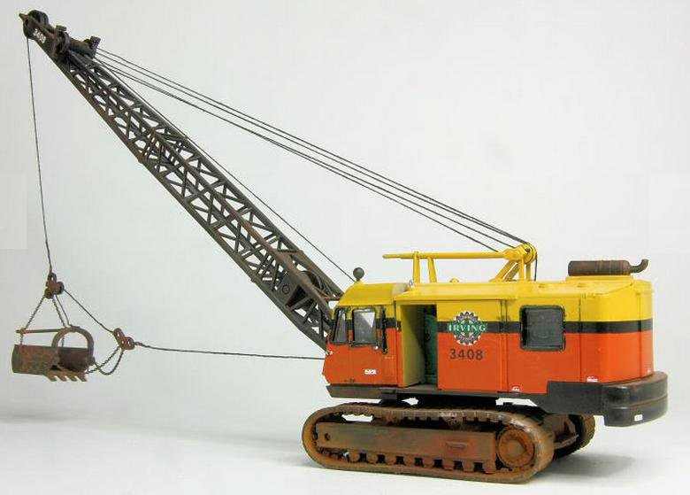
used to excavate soft earth and to deposit in nearby. It throws a large bucket out and pulls the bucket back towards machine to scoop up the earth.
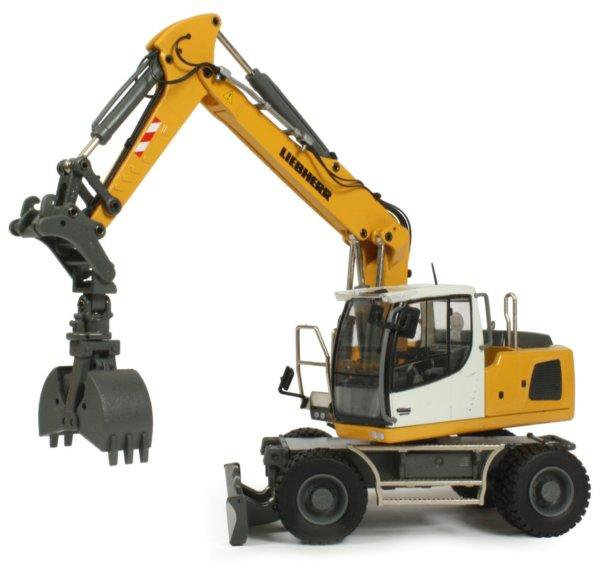
Clampshell: Used for deep vertical excavation, for eg. drainage and culvert excavation, deep footing for bridges.
Equipments: Compacting
- Refers to machinery used to compact, to increase the density and reducing voids
- Examples: Smooth wheel roller, Sheep’s foot roller, Pneumatic tyred roller, Vibrating roller
Smooth Wheel Roller:
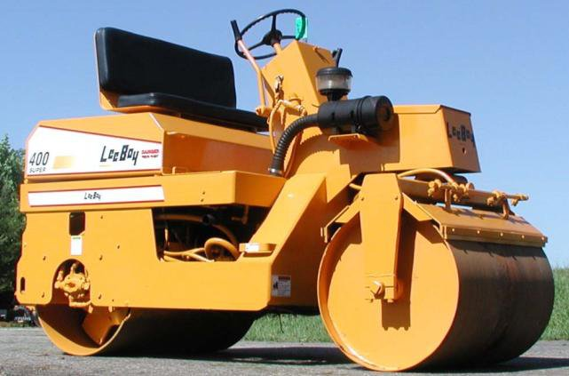
Consists of smooth wheels specially of steels. Suitable for compacting gravel, sand, crushed rock, where crushing action is required.
Sheep’s Foot Roller:
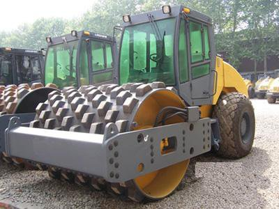
A roller with a steel drum covered with many projecting feet. The feet compress and knead. Suitable for cohesive soil like silty and clay sand, medium and heavy clay.
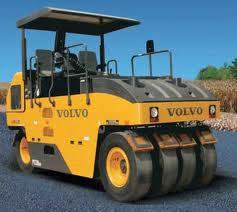
Pneumatic Tyred roller: Rubber tyre compresses and kneads the soil. Multiple rubber tyres. Suitable for moderately cohesive soils such as silty soils, clayey soils, clayey or gravelly sands.
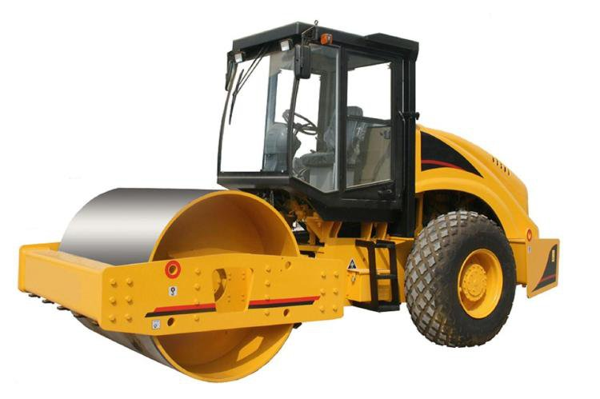
Vibrating roller: Steel wheel roller equipped with vibratory drums. Drum vibration enable to achieve high compaction. Used to compact pavement layers and subgrade to high degree of density.
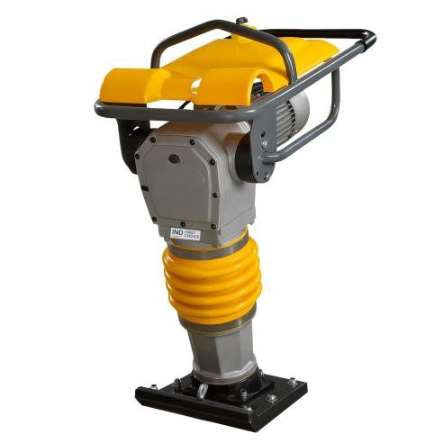
Rammer: Has vibrating base plate used for compaction. Suitable for compacting small area where rollers can’t operate.
Equipments: Leveling
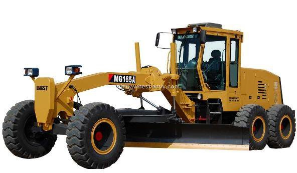
Grader: A self propelled or towed machine motor grader. Used to shape, level and smooth the ground.
Equipments: Lifting
Crane:
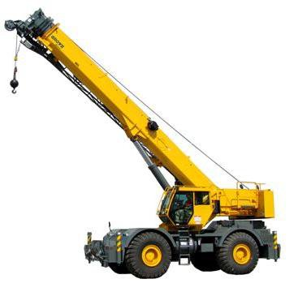
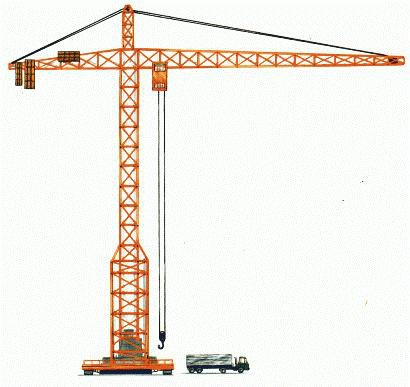
Used to lift and lower materials and to move them horizontally. Cranes can be stationary, mobile, overhead gantry tower.
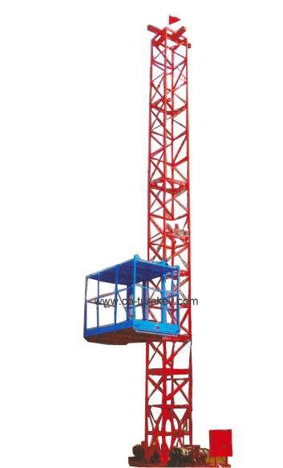
Hoist: Used to carry personnel, materials, and equipment quickly between the ground and higher floors. Commonly used in large scale construction projects.
Forklift truck:
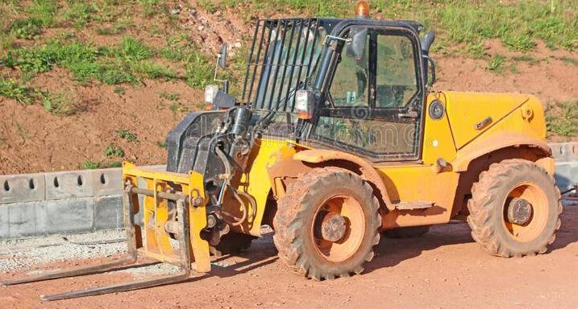
Designed to lift or move objects. The truck has two steel forks that helps to pick an object and move to destination.
Equipment: Paving
Bitumen Spreader (distributor):
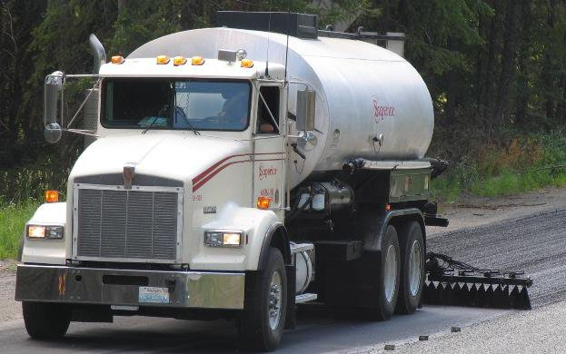
Used to apply prime or tack coats on surface in preparation for paving.
Aggregate Spreader:
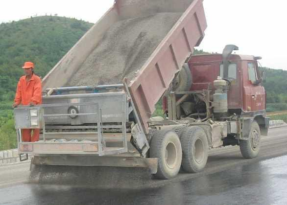
Used to distribute aggregate evenly over the film of asphalt sprayed by asphalt distribution.
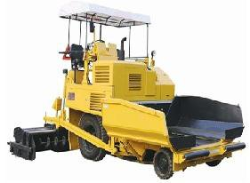
Bituminous Paver: Self-propelled machines designed to place hot mix asphalt concrete or premix carpet on the roadway
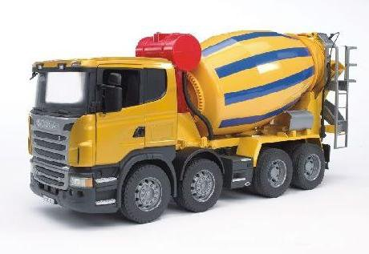
Cement Concrete Mixer: To homogenously combine cement, aggregate (sand, gravel), water and other admixtures.
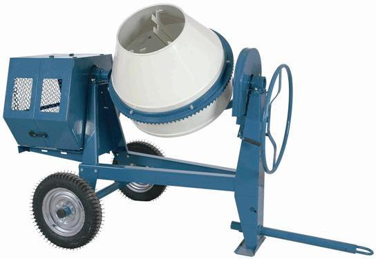
Cement Concrete Paver:
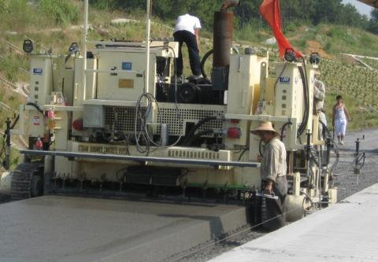
Self propelled machines to place cement concrete mix on the roadway to specific depth.
Concrete Vibrators:
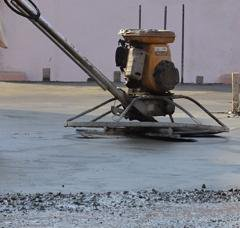
Used for compacting the concrete after its placement. Needle and surface vibrators are used.
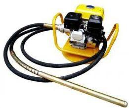
Equipment: Transport
Haul Truck: Used for transporting HMA and aggregates from the place of production to construction site.
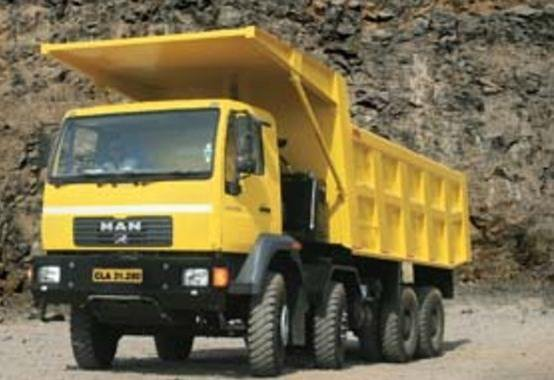
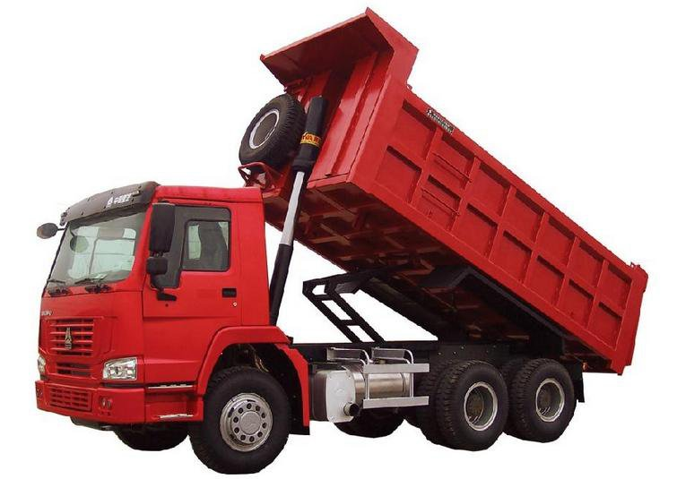
Tipper/Tip truck: The rear platform can be raised at the front end to enable the load to be discharged by gravity.
Dump Trucks: Used to transport earth. Can be side or rear dump trucks.
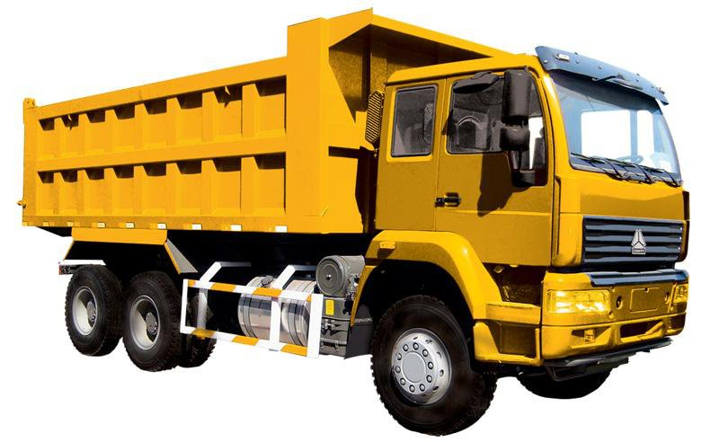
Trailer: To transport goods, materials and equipment.
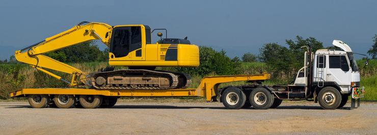
Mini Dumper: High speed pneumatic wheeled trucks useful for fast loading, short hauling and dumping on rough roads.
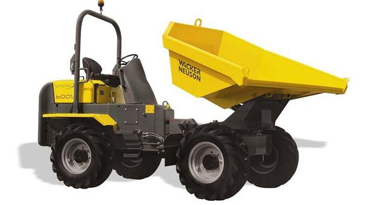
Concrete Transport Truck: Transport and mix concrete upto the construction site.
Plant
Stone crusher plant: To reduce large rocks into smaller rocks or rock dust. Arrangements are also made to differentiate pieces of different composition.
Asphalt Mixing Plant:
- Can be hot mix or cold mix. Main function is heating and drying aggregate, screening and measuring aggregate, the filler and bitumen and mixing the aggregate bitumen in proportion to produce homogenous mix.
- Continuous mix plant or batch mix plant
Mixing Plant: Mixed different ingredients in required proportion. Storage bins, hopper, mixer.
4.3 Preparation of sub-grade: Excavation, fill and compaction
Preparation of Subgrade
- It includes all operation before the pavement could be laid over it
- Includes:
- Site clearance
- Earthworks : Earth work in excavation (cut) Earth work in embankment (fill)
- Compaction
Preparation of Subgrade: Site Clearance
- Removal of existing trees, stumps and roots along the alignment
- Removal of existing structures along the alignment
- Clearing of bushes and shrubs at least covering toe width
- Extend site clearance a minimum of 1 to 3 m from the top of the cut or toe of the fill.
Preparation of Subgrade: Earthworks
- All construction operations required to convert the natural land to the sections and grades as in the plans.
- Can be cut or fill.
- Movement of materials from cut to the nearest fill minimizes construction cost.
- The economic haul limits can be determined using a mass haul diagram.
Preparation of Subgrade: Excavation (Cut)
- Cutting and removing the earth, rocks from its original position, transporting and dumping
- Required when the natural ground level is higher than the designed level to maintain the vertical alignment
- Also, construction of drainage structures require excavation.
- Equipment: Tools for small works, for highways dozers, scrappers, drag line and clampshell etc.
Design:
- Depth
- Stability of foundation
- Stability of slope and
- Requirement of drainage structures.
Preparation of Subgrade: Embankment (Fill)
- The filling of earth/soil to achieve the desired formation level
- Required when the natural ground is below the formation level.
- Formation level is raised to maintain the vertical alignment, keep subgrade above high water table, and to prevent damage due to capillary rise.
Design:
- Height of fill,
- Fill materials,
- Settlement of embankment,
- Stability of foundation,
- Stability of slopes
Preparation of Subgrade: Embankment Construction
- Site clearance
- Filling the site with earth from borrow pits.
- Mixing with water up to optimum moisture content
- Leveling and compacting in of each layer (around 15cm a layer)
- Check side slope
- Continue with other layers till formation level.
4.4 Mass Haul diagram2082208120802076207420712068
Past Exam Questions on this Topic
- Describe the characteristics of mass haul diagram with neat sketch. Define shrinkage and swelling of earth. [6+2] (2082 Bhadra, Q8)
Solution
Mass Haul Diagram (MHD) — a graphical representation of the cumulative earthwork volume (cut positive, fill negative, after applying the shrinkage/swell correction) plotted against chainage, drawn immediately below the longitudinal profile. It tells the contractor how much material must be moved, how far, and in which direction, and lets the average haul, free haul and overhaul be measured.
Characteristics of the mass haul diagram
Mass haul diagram, plotted below the longitudinal profile. A rising curve is an excess of cut, a falling curve an excess of fill; any horizontal line is a balance line, and the free-haul line drawn above it leaves the overhaul volume between the two. - Rising curve = cut (excavation exceeds fill); falling curve = fill.
- A steep slope means a large quantity of earthwork per unit length; a flat slope means little earthwork.
- The difference of ordinates between any two points = the net volume of cut over fill (or vice-versa) between those points.
- Points of zero slope (maxima and minima) are the points where the work changes from cut to fill or fill to cut, i.e. the grade points where the formation line crosses the natural ground.
- Any horizontal line that cuts the curve at two points is a balancing line: cut and fill between those two balance points are equal, so that length is self-balancing.
- A loop above the balancing line means the haul is from left to right (convex loop); a loop below means the haul is from right to left.
- The area enclosed between the curve and the balancing line = haul (volume × distance, m³·m or station-yards); dividing it by the maximum ordinate gives the average haul distance.
Sketch: longitudinal profile on top (CUT – FILL – CUT), mass curve below with the balancing line, free-haul line and the loops marked.
Shrinkage — earth taken from a cut or a borrow pit occupies a smaller volume after it is compacted in the embankment, because the compacted density is higher than the in-situ density. The volume of cut is therefore multiplied by a shrinkage factor (typically 0.80-0.90, i.e. 10-20% shrinkage) before it is plotted on the mass haul diagram.
Swelling (bulking) — rock and some hard materials occupy a larger volume after excavation than in place, because of the voids created by breaking; the swell factor may be 1.20-1.40 (20-40% swell).
Both corrections must be applied to the volumes before the mass curve is drawn, otherwise the balance points and the haul quantities will be wrong.
Manual.pdf §3.4 — Mass haul diagram, book pp.208-210.
- Explain the characteristics of Mass Haul Diagram with neat diagram. Define the free haul, the over haul and shrinkage and swelling: [8] (2081 Bhadra, Q7)
Solution
Mass Haul Diagram (MHD) — a graphical representation of the cumulative earthwork volume (cut positive, fill negative, after applying the shrinkage/swell correction) plotted against chainage, drawn immediately below the longitudinal profile. It tells the contractor how much material must be moved, how far, and in which direction, and lets the average haul, free haul and overhaul be measured.
Characteristics of the mass haul diagram
Mass haul diagram, plotted below the longitudinal profile. A rising curve is an excess of cut, a falling curve an excess of fill; any horizontal line is a balance line, and the free-haul line drawn above it leaves the overhaul volume between the two. - Rising curve = cut (excavation exceeds fill); falling curve = fill.
- A steep slope means a large quantity of earthwork per unit length; a flat slope means little earthwork.
- The difference of ordinates between any two points = the net volume of cut over fill (or vice-versa) between those points.
- Points of zero slope (maxima and minima) are the points where the work changes from cut to fill or fill to cut, i.e. the grade points where the formation line crosses the natural ground.
- Any horizontal line that cuts the curve at two points is a balancing line: cut and fill between those two balance points are equal, so that length is self-balancing.
- A loop above the balancing line means the haul is from left to right (convex loop); a loop below means the haul is from right to left.
- The area enclosed between the curve and the balancing line = haul (volume × distance, m³·m or station-yards); dividing it by the maximum ordinate gives the average haul distance.
Sketch: longitudinal profile on top (CUT – FILL – CUT), mass curve below with the balancing line, free-haul line and the loops marked.
Haul = the transport of excavated material from its original position to its final location (also called authorised haul), measured as volume × distance.
Free haul distance = the distance up to which the contractor must move the earth without any extra payment — it is already covered by the unit rate for excavation (commonly 300 m in Nepalese/Indian practice). On the MHD it is shown by a horizontal line whose intercept on the curve equals the free-haul distance.
Overhaul = the haul in excess of the free-haul distance, for which an extra payment is made:
overhaul = volume × (average haul distance − free-haul distance)Economic haul distance (limit of economic haul) = the distance beyond which it becomes cheaper to waste the excavated material and borrow fresh material for the fill than to haul it:
LEH = free-haul distance + (cost of borrow per m³) / (cost of overhaul per m³·station)Shrinkage — earth taken from a cut or a borrow pit occupies a smaller volume after it is compacted in the embankment, because the compacted density is higher than the in-situ density. The volume of cut is therefore multiplied by a shrinkage factor (typically 0.80-0.90, i.e. 10-20% shrinkage) before it is plotted on the mass haul diagram.
Swelling (bulking) — rock and some hard materials occupy a larger volume after excavation than in place, because of the voids created by breaking; the swell factor may be 1.20-1.40 (20-40% swell).
Both corrections must be applied to the volumes before the mass curve is drawn, otherwise the balance points and the haul quantities will be wrong.
Manual.pdf §3.4, book pp.208-210.
- Define Mass Haul Diagram with its characteristics. Write down the construction procedure of soil cement stabilized base course (2081 Baishakh, Q7)
Solution
Mass Haul Diagram (MHD) — a graphical representation of the cumulative earthwork volume (cut positive, fill negative, after applying the shrinkage/swell correction) plotted against chainage, drawn immediately below the longitudinal profile. It tells the contractor how much material must be moved, how far, and in which direction, and lets the average haul, free haul and overhaul be measured.
Characteristics of the mass haul diagram
Mass haul diagram, plotted below the longitudinal profile. A rising curve is an excess of cut, a falling curve an excess of fill; any horizontal line is a balance line, and the free-haul line drawn above it leaves the overhaul volume between the two. - Rising curve = cut (excavation exceeds fill); falling curve = fill.
- A steep slope means a large quantity of earthwork per unit length; a flat slope means little earthwork.
- The difference of ordinates between any two points = the net volume of cut over fill (or vice-versa) between those points.
- Points of zero slope (maxima and minima) are the points where the work changes from cut to fill or fill to cut, i.e. the grade points where the formation line crosses the natural ground.
- Any horizontal line that cuts the curve at two points is a balancing line: cut and fill between those two balance points are equal, so that length is self-balancing.
- A loop above the balancing line means the haul is from left to right (convex loop); a loop below means the haul is from right to left.
- The area enclosed between the curve and the balancing line = haul (volume × distance, m³·m or station-yards); dividing it by the maximum ordinate gives the average haul distance.
Sketch: longitudinal profile on top (CUT – FILL – CUT), mass curve below with the balancing line, free-haul line and the loops marked.
Soil-cement stabilised base — materials
- Soil: material passing 4.75 mm > 50%, passing 75 μm < 50%, liquid limit < 40%, plasticity index < 18%.
- Ordinary Portland cement, 2-12% by weight, the exact percentage fixed by laboratory (unconfined compressive strength) tests.
- Clean water for hydration and compaction at OMC.
Equipment — mix-in-place: rotavator/pulvi-mixer or graders (or hand tools for labour-based work), cement spreader, water tanker, smooth-wheeled/vibratory roller; plant-mix: a central mixing plant with cement truck-mixers plus the same spreading and compacting equipment.
Construction procedure
- Prepare the subgrade / sub-base to the required grade and camber.
- Pulverize the soil to the required degree of pulverisation.
- Spread the cement uniformly at the designed rate and dry-mix it with the soil.
- Add water to bring the mix to OMC and re-mix thoroughly.
- Spread and grade the mix to the required thickness, level and camber.
- Compact with a smooth-wheeled (or vibratory) roller to the specified dry density; the whole operation from adding water to finishing compaction must be completed within about 2 hours of adding the cement.
- Moist-cure for about 7 days by preventing moisture loss (bituminous seal, moist earth cover or wet hessian).
Field controls — degree of pulverisation, cement content, moisture content, field dry density, unconfined compressive strength of moulded specimens, and surface regularity.
Manual.pdf §3.4 (book pp.208-210) and Lecture 22-24 §4.5 (soil-cement stabilisation).
- Explain briefly mass haul diagram with neat figure. Define free haul, overhaul and economic haul distance. [5+3] (2080 Bhadra, Q7)
Solution
Mass Haul Diagram (MHD) — a graphical representation of the cumulative earthwork volume (cut positive, fill negative, after applying the shrinkage/swell correction) plotted against chainage, drawn immediately below the longitudinal profile. It tells the contractor how much material must be moved, how far, and in which direction, and lets the average haul, free haul and overhaul be measured.
Characteristics of the mass haul diagram
Mass haul diagram, plotted below the longitudinal profile. A rising curve is an excess of cut, a falling curve an excess of fill; any horizontal line is a balance line, and the free-haul line drawn above it leaves the overhaul volume between the two. - Rising curve = cut (excavation exceeds fill); falling curve = fill.
- A steep slope means a large quantity of earthwork per unit length; a flat slope means little earthwork.
- The difference of ordinates between any two points = the net volume of cut over fill (or vice-versa) between those points.
- Points of zero slope (maxima and minima) are the points where the work changes from cut to fill or fill to cut, i.e. the grade points where the formation line crosses the natural ground.
- Any horizontal line that cuts the curve at two points is a balancing line: cut and fill between those two balance points are equal, so that length is self-balancing.
- A loop above the balancing line means the haul is from left to right (convex loop); a loop below means the haul is from right to left.
- The area enclosed between the curve and the balancing line = haul (volume × distance, m³·m or station-yards); dividing it by the maximum ordinate gives the average haul distance.
Sketch: longitudinal profile on top (CUT – FILL – CUT), mass curve below with the balancing line, free-haul line and the loops marked.
Haul = the transport of excavated material from its original position to its final location (also called authorised haul), measured as volume × distance.
Free haul distance = the distance up to which the contractor must move the earth without any extra payment — it is already covered by the unit rate for excavation (commonly 300 m in Nepalese/Indian practice). On the MHD it is shown by a horizontal line whose intercept on the curve equals the free-haul distance.
Overhaul = the haul in excess of the free-haul distance, for which an extra payment is made:
overhaul = volume × (average haul distance − free-haul distance)Economic haul distance (limit of economic haul) = the distance beyond which it becomes cheaper to waste the excavated material and borrow fresh material for the fill than to haul it:
LEH = free-haul distance + (cost of borrow per m³) / (cost of overhaul per m³·station)Manual.pdf §3.4, book pp.208-210.
- Define mass haul diagram Write down the construction procedure of WBM road. [2+6] (2076 Chaitra, Q7)
Solution
Mass Haul Diagram (definition) — a graphical representation of the cumulative earthwork volume (cut positive, fill negative, corrected for shrinkage/swell) plotted against chainage below the longitudinal profile; it shows how much earth has to be moved, how far and in which direction, and from it the average haul, the free haul and the overhaul are measured.
Mass haul diagram, plotted below the longitudinal profile. A rising curve is an excess of cut, a falling curve an excess of fill; any horizontal line is a balance line, and the free-haul line drawn above it leaves the overhaul volume between the two. Water Bound Macadam (WBM) — a base/sub-base course of crushed or broken stone whose particles are mechanically interlocked by rolling, the voids being filled with screenings and binding material with the help of water (pioneered by John Loudon McAdam, c.1820).
Materials
- Coarse aggregate — crushed / broken hard stone or gravel of the specified grading (63-90 mm, 53-63 mm or 22.4-53 mm depending on the course); stock 20% extra along the road.
- Screenings — smaller aggregate (13.2 mm / 11.2 mm) to fill the voids.
- Binding material — stone dust, kankar nodules or a suitable plastic soil (PI ≤ 6 for base course, 5-10 for the surface course).
- Water.
Equipment — water tanker, dump trucks, motor grader, three-wheeled 8-10 t power roller (or tandem / vibratory roller), rakes and hand tools.
Construction procedure
- Preparation of the foundation — the subgrade or the lower course is prepared to the required grade and camber, and any pot-holes or ruts are made good.
- Provision of lateral confinement — shoulders/kerbs are built up first so that the aggregate cannot spread sideways during rolling.
- Spreading of the coarse aggregate uniformly to a loose thickness that gives a compacted layer not exceeding 75-100 mm.
- Dry rolling with an 8-10 t roller, starting from the edges and progressing to the centre with a one-third overlap, until the aggregate is well keyed.
- Application of screenings in three or more thin doses with dry rolling and brooming, so that the voids are filled without forming a crust.
- Sprinkling of water and wet rolling — the surface is sprinkled, swept and rolled until about half the voids are filled.
- Application of the binding material as a slurry, in two or more thin layers, each followed by wet rolling and brooming until a wave of grout appears ahead of the roller.
- Setting and drying — the finished course is allowed to dry overnight (or cured) before the next layer is laid or traffic is admitted.
Quality control — aggregate tests (Los Angeles abrasion, aggregate impact value, flakiness & elongation index), gradation, plasticity index of the binding material, moisture at 90-105% of OMC, and field dry density (98% of MDD for base, 95% for sub-base and shoulders).
Manual.pdf §3.4 (book p.208) and Lecture 22-24 §4.5 (WBM).
- What is Mass Haul Diagram? What are the equipment and plants needed for the accomplishment of various activities of road construction? (2074 Ashwin, Q7)
Solution
Mass Haul Diagram (MHD) — a graphical representation of the cumulative earthwork volume (cut positive, fill negative, after applying the shrinkage/swell correction) plotted against chainage, drawn immediately below the longitudinal profile. It tells the contractor how much material must be moved, how far, and in which direction, and lets the average haul, free haul and overhaul be measured.
Characteristics of the mass haul diagram
Mass haul diagram, plotted below the longitudinal profile. A rising curve is an excess of cut, a falling curve an excess of fill; any horizontal line is a balance line, and the free-haul line drawn above it leaves the overhaul volume between the two. - Rising curve = cut (excavation exceeds fill); falling curve = fill.
- A steep slope means a large quantity of earthwork per unit length; a flat slope means little earthwork.
- The difference of ordinates between any two points = the net volume of cut over fill (or vice-versa) between those points.
- Points of zero slope (maxima and minima) are the points where the work changes from cut to fill or fill to cut, i.e. the grade points where the formation line crosses the natural ground.
- Any horizontal line that cuts the curve at two points is a balancing line: cut and fill between those two balance points are equal, so that length is self-balancing.
- A loop above the balancing line means the haul is from left to right (convex loop); a loop below means the haul is from right to left.
- The area enclosed between the curve and the balancing line = haul (volume × distance, m³·m or station-yards); dividing it by the maximum ordinate gives the average haul distance.
Sketch: longitudinal profile on top (CUT – FILL – CUT), mass curve below with the balancing line, free-haul line and the loops marked.
Tools, equipment and plants used in road construction (Manual §3.3):
Category Items Tools (labour-based work) Shovel, spade, pick, chisel, hand rammer, trowel, brushes, wheelbarrow Earth-moving equipment Bulldozer / angle dozer, scraper, loader, excavator, backhoe, dragline, clamshell, trench digger Compaction equipment Smooth-wheeled roller, vibratory roller, pneumatic-tyred roller, sheep-foot roller, plate compactors and rammers Levelling equipment Motor grader Paving equipment Binder storage tank with heating device, bitumen distributor (sprayer), aggregate/chip spreader, concrete mixer, bituminous mechanical paver, concrete paver Lifting equipment Backhoe and loader (light loads), cranes Transport equipment Dumper trucks (tippers), flat-body trucks, mini dumpers Miscellaneous Rock drillers, drilling machines, water tanker Plants Cement-concrete (batching) plant, asphalt/hot-mix plant, cold-mix plant, aggregate crushing plant, screening plant, washing plant For a bituminous road the key items are the hot-mix plant, bitumen distributor, chip spreader, mechanical paver, tippers, and smooth-wheeled + pneumatic rollers. For a cement-concrete road they are the batching & mixing plant, transit/truck mixers, concrete paver-finisher, needle (poker) vibrators, screed/float, joint-cutting machine, and curing equipment.
Manual.pdf §3.4 (book pp.208-210) and §3.3 (book p.207).
- Explain, with a neat diagram, the characteristics of a mass haul diagram, including free haul, over haul, economic haul, and the shrinkage and swelling factors. (2071 Chaitra, Q8)
Solution
Mass Haul Diagram (MHD) — a graphical representation of the cumulative earthwork volume (cut positive, fill negative, after applying the shrinkage/swell correction) plotted against chainage, drawn immediately below the longitudinal profile. It tells the contractor how much material must be moved, how far, and in which direction, and lets the average haul, free haul and overhaul be measured.
Characteristics of the mass haul diagram
Mass haul diagram, plotted below the longitudinal profile. A rising curve is an excess of cut, a falling curve an excess of fill; any horizontal line is a balance line, and the free-haul line drawn above it leaves the overhaul volume between the two. - Rising curve = cut (excavation exceeds fill); falling curve = fill.
- A steep slope means a large quantity of earthwork per unit length; a flat slope means little earthwork.
- The difference of ordinates between any two points = the net volume of cut over fill (or vice-versa) between those points.
- Points of zero slope (maxima and minima) are the points where the work changes from cut to fill or fill to cut, i.e. the grade points where the formation line crosses the natural ground.
- Any horizontal line that cuts the curve at two points is a balancing line: cut and fill between those two balance points are equal, so that length is self-balancing.
- A loop above the balancing line means the haul is from left to right (convex loop); a loop below means the haul is from right to left.
- The area enclosed between the curve and the balancing line = haul (volume × distance, m³·m or station-yards); dividing it by the maximum ordinate gives the average haul distance.
Sketch: longitudinal profile on top (CUT – FILL – CUT), mass curve below with the balancing line, free-haul line and the loops marked.
Haul = the transport of excavated material from its original position to its final location (also called authorised haul), measured as volume × distance.
Free haul distance = the distance up to which the contractor must move the earth without any extra payment — it is already covered by the unit rate for excavation (commonly 300 m in Nepalese/Indian practice). On the MHD it is shown by a horizontal line whose intercept on the curve equals the free-haul distance.
Overhaul = the haul in excess of the free-haul distance, for which an extra payment is made:
overhaul = volume × (average haul distance − free-haul distance)Economic haul distance (limit of economic haul) = the distance beyond which it becomes cheaper to waste the excavated material and borrow fresh material for the fill than to haul it:
LEH = free-haul distance + (cost of borrow per m³) / (cost of overhaul per m³·station)Shrinkage — earth taken from a cut or a borrow pit occupies a smaller volume after it is compacted in the embankment, because the compacted density is higher than the in-situ density. The volume of cut is therefore multiplied by a shrinkage factor (typically 0.80-0.90, i.e. 10-20% shrinkage) before it is plotted on the mass haul diagram.
Swelling (bulking) — rock and some hard materials occupy a larger volume after excavation than in place, because of the voids created by breaking; the swell factor may be 1.20-1.40 (20-40% swell).
Both corrections must be applied to the volumes before the mass curve is drawn, otherwise the balance points and the haul quantities will be wrong.
Manual.pdf §3.4, book pp.208-210.
- a) What is Mass Haul Diagram? What are the equipments and plants needed for the accomplishment of various activities of road construction? [2+6] b) Distinguish between prime coat and tack coat, Explain construction method of surface dressing: [2+6] (2068 Baishakh, Q4)
Solution
(a) Mass haul diagram, equipment and plants [2+6]
Mass Haul Diagram (MHD) — a graphical representation of the cumulative earthwork volume (cut positive, fill negative, after applying the shrinkage/swell correction) plotted against chainage, drawn immediately below the longitudinal profile. It tells the contractor how much material must be moved, how far, and in which direction, and lets the average haul, free haul and overhaul be measured.
Characteristics of the mass haul diagram
Mass haul diagram, plotted below the longitudinal profile. A rising curve is an excess of cut, a falling curve an excess of fill; any horizontal line is a balance line, and the free-haul line drawn above it leaves the overhaul volume between the two. - Rising curve = cut (excavation exceeds fill); falling curve = fill.
- A steep slope means a large quantity of earthwork per unit length; a flat slope means little earthwork.
- The difference of ordinates between any two points = the net volume of cut over fill (or vice-versa) between those points.
- Points of zero slope (maxima and minima) are the points where the work changes from cut to fill or fill to cut, i.e. the grade points where the formation line crosses the natural ground.
- Any horizontal line that cuts the curve at two points is a balancing line: cut and fill between those two balance points are equal, so that length is self-balancing.
- A loop above the balancing line means the haul is from left to right (convex loop); a loop below means the haul is from right to left.
- The area enclosed between the curve and the balancing line = haul (volume × distance, m³·m or station-yards); dividing it by the maximum ordinate gives the average haul distance.
Sketch: longitudinal profile on top (CUT – FILL – CUT), mass curve below with the balancing line, free-haul line and the loops marked.
Tools, equipment and plants used in road construction (Manual §3.3):
Category Items Tools (labour-based work) Shovel, spade, pick, chisel, hand rammer, trowel, brushes, wheelbarrow Earth-moving equipment Bulldozer / angle dozer, scraper, loader, excavator, backhoe, dragline, clamshell, trench digger Compaction equipment Smooth-wheeled roller, vibratory roller, pneumatic-tyred roller, sheep-foot roller, plate compactors and rammers Levelling equipment Motor grader Paving equipment Binder storage tank with heating device, bitumen distributor (sprayer), aggregate/chip spreader, concrete mixer, bituminous mechanical paver, concrete paver Lifting equipment Backhoe and loader (light loads), cranes Transport equipment Dumper trucks (tippers), flat-body trucks, mini dumpers Miscellaneous Rock drillers, drilling machines, water tanker Plants Cement-concrete (batching) plant, asphalt/hot-mix plant, cold-mix plant, aggregate crushing plant, screening plant, washing plant For a bituminous road the key items are the hot-mix plant, bitumen distributor, chip spreader, mechanical paver, tippers, and smooth-wheeled + pneumatic rollers. For a cement-concrete road they are the batching & mixing plant, transit/truck mixers, concrete paver-finisher, needle (poker) vibrators, screed/float, joint-cutting machine, and curing equipment.
(b) Prime coat vs tack coat; construction of surface dressing [2+6]
Interface treatment is a thin film of bituminous binder sprayed on an existing surface before a new bituminous layer is laid. There are two types — prime coat and tack coat; the seal coat is a final surface treatment.
Prime coat Tack coat Seal coat Applied on A porous, non-bituminous (granular/WBM/WMM) base An impervious surface — existing bituminous or concrete pavement, or a primed base The finished bituminous surface, or an old cracked/worn surface Purpose Penetrates and plugs the voids, binds the loose particles, waterproofs the base and creates a bond for the layer above Provides adhesion between the old and the new bituminous layer and prevents slippage, so that the layers act together Seals the surface against water, increases skid resistance and protects the surfacing Binder Low-viscosity MC cutback or SS-1 cationic emulsion High-viscosity RS-1 cationic emulsion, VG-10 paving bitumen (or RC-70 cutback below 0°C) SS-2 emulsion / paving bitumen + cover aggregate Rate 0.6-1.5 kg/m² (higher for more porous bases) 0.5 kg/m² on an existing black-top, up to 1.0 kg/m² on a pervious surface 0.68-0.98 kg/m² with aggregate passing 12.5 mm and retained on 6 mm Curing Allowed to cure at least 24 hours; blinding material is applied if the bitumen has not penetrated The new layer is laid as soon as the tack coat becomes tacky Cured 24 hours, aggregate spread and rolled Equipment (all three): mechanical broom or hand brushes for cleaning, bitumen distributor (self-propelled or towed pressure sprayer) with a heating device, chip/aggregate spreader and light rollers.
Construction procedure (common): (1) sweep the surface clean with a mechanical broom and remove all loose material; (2) do not spray in rainy, windy or foggy weather or below 10°C; (3) spray the binder uniformly at the specified rate with the distributor; (4) for a seal coat, spread the cover aggregate before the binder sets and roll it in; (5) allow the specified curing period before opening to traffic or laying the next layer.
Surface dressing = a thin bituminous surface treatment in which a bituminous binder is sprayed on the prepared base and immediately covered with single-sized stone chippings which are then rolled in. It provides a waterproof, dust-free, skid-resistant wearing surface and protects the base from abrasion, but adds no structural strength.
- SBST — Single Bituminous Surface Treatment (one binder + one chipping application).
- DBST / DBSD — Double Bituminous Surface Treatment / Double Bituminous Surface Dressing (two successive applications, the second with about half the binder and half the chipping size).
Materials: bitumen of grade 80/100 or 180/200 (or a cationic emulsion); cover aggregate with Los Angeles abrasion < 35%, aggregate impact value < 30%, flakiness index < 25% and water absorption < 1%.
Equipment: bitumen heating/storage unit, bitumen distributor (sprayer), chip spreader, 5-8 t smooth-wheeled or pneumatic-tyred roller, and mechanical brooms.
Construction procedure (SBST)
- Clean the existing surface with mechanical brooms and repair pot-holes, ruts and depressions.
- Apply the prime coat at the specified rate if the base is pervious, and cure it for at least 24 hours with no traffic.
- Spray the bitumen uniformly from the distributor at the design rate.
- Spread the cover aggregate of uniform gradation before the binder sets.
- Roll with a pneumatic-tyred roller (starting from the edges, moving to the centre, overlapping one-third of the roller width) to press the chippings into the binder.
- Sweep off the excess chippings within 24-48 hours and open to traffic.
Construction procedure (DBST / DBSD) — carry out a complete SBST as above; sweep away the loose aggregate; apply a second binder application of about one-third to one-half of the first; spread aggregate about half the size of the first application; roll with a pneumatic-tyred roller; and again broom off the excess within 24-48 hours.
Quality control: binder temperature; aggregate tests (LAA, impact value, flakiness index, plasticity index); gradation; rate of application of binder and aggregate; and binder tests (penetration, viscosity, ductility).
Manual.pdf §3.3, §3.4, §3.6 and §3.7 (book pp.207-219).
Mass Haul Diagram
- Mass haul diagram is a diagrammatic representation of net earthwork volumes involved in road construction along a linear profile.
- Horizontal stationing (chainage) is plotted along the X-axis and Net cut/fill values are plotted along Y axis.
- Net cut values are plotted above the X-axis (positive Y value) and net fill values are plotted below the X-axis (negative Y value).
Significance: Supports identification of ways in which the earth can be hauled
economically:
- Helps to find distances over which cut and fill will balance.
- Help to determine quantities of materials to be moved and the direction of movement.
- Helps to identify areas where earth has to be borrowed or waste and the amounts involved.
Construction:
- Compute the net earthwork values for each station, applying appropriate shrink and swell factor.
- Net cuts have a positive value, net fills have a negative value.
- The value at the first station (origin) = 0.
- Plot the value of each succeeding station which equals the cumulative value to that point.
Characteristics of Mass Haul Diagram
- MHD is plotted below the longitudinal profile of the road.
- The accumulated volume of earthwork at starting point is 0.
- The ordinate at any station represents the cumulative net earthwork volume up to that station.
- A rising curve at any point indicates an excess of cut over fill at that point. Similarly, a falling curve indicates fill is greater than cut.
- The steeper the slope of the mass haul curve, the higher the rate of cut or rate of fill.
- The maximum ordinate indicates a change from net cut to net fill. Similarly, minimum ordinate indicates a change from net fill to net cut.
- A balance point is a point where the cumulative cut and cumulative fill are equal.
- The baseline is the zero balance line. Any horizontal line parallel to the baseline can also be used as balance line and the two points within the same curve intersected by this line with the mass haul curve indicates a balance of cut and fill between these two points.
- The shape of the loop of mass haul diagram shows the direction of haul. A convex loop indicates that the haul from cut to fill is from left to right and a concave loop indicates that the haul is from right to left.
Mass Haul Diagram
Station Cum. Thousands M (1 st = 100 m) EW 20000 38000 28250 -5250 -10 -31250 -28000 -20 -3000 -30 9000 20500 -40
Haul, Free Haul, Overhaul and Economic Haul
Haul:
- Movement of earth over a distance. Earthwork haulage is haul volume- distance (m3 .m)
Free Haul Distance:
- The distance to which the contractor is supposed to move the earth without any additional charge. The cost for hauling within this distance is covered by the unit rate of earthwork.
Overhaul Distance:
- The distance in excess of free haul distance for which an additional charge is paid per unit of haulage.
Shrinkage and Swell
Shrinkage:
- Volume of the compacted embankment is less than the borrow area volume, called Shrinkage
- Shrinkage factor depends on the soil type and vary between 10 – 20%.
Swell:
- Excavated soil/rock occupy a larger volume, called swell
- Swell may vary from 20 – 40%
Mass Haul Diagram
4.5 Granular, water bound macadam, soil stabilized sub base and base course20822079207620752072
Past Exam Questions on this Topic
- List out the various methods of soil stabilization used in highway construction When each of the method of stabilization is applicable? Discuss the material, and construction procedure of lime stabilized road [2+2+4] (2082 Bhadra, Q7)
Solution
Soil stabilisation = improving the strength, durability and volume stability of a soil by proportioning it with other materials and/or by adding an admixture, and compacting it, so that it can be used as a sub-base or base course.
Methods of soil stabilisation and when each is applicable
Method Principle Applicable when Mechanical stabilisation Blending two or more soils/aggregates to obtain the required grading, plasticity and strength, followed by compaction A locally available granular material lacks fines, or a fine soil lacks a granular skeleton; cheapest method where a suitable second material is nearby Cement stabilisation (soil-cement) Cement hydration bonds the particles and reduces plasticity; 2-12% cement by weight, cured about 7 days Sandy and gravelly soils, and silty soils of low plasticity (material passing 4.75 mm > 50%, passing 75 μm < 50%, LL < 40%, PI < 18) Lime stabilisation (soil-lime) Cation exchange + pozzolanic reaction; 4-8% lime by weight, moist-cured about 14 days Clayey soils of high plasticity — lime reduces the plasticity index and makes the clay workable Bitumen stabilisation (soil-bitumen) Bitumen waterproofs and binds the particles; 4-8% residual bitumen (cutback or slow-setting emulsion) Non-plastic sandy materials, and where waterproofing of the layer is the main need Chemical / other (calcium chloride, sodium silicate, resins, geosynthetics) Moisture retention, cementation or reinforcement Special problems — dust control, very weak subgrades, water-logged sites Advantages: increases the bearing capacity and shear strength of the soil, prevents changes of soil properties with moisture, prevents cracking, and improves drainage and frost resistance.
Soil-lime stabilised road — materials
- Consistent-quality slaked / hydrated lime, Ca(OH)2, 4-8% by weight (the exact percentage from laboratory strength tests).
- Clayey or high-plasticity soil to be stabilised.
- Fresh water for moisture control and curing.
Construction procedure
- Prepare the subgrade to the required grade and camber.
- Pulverize the soil to be stabilised.
- Add part of the lime (as dry powder or as a slurry with water) and mix.
- Allow the mixture to age (mellow) for about a day — the lime breaks down the clay clods so that pulverisation becomes easy — then re-mix.
- Add the remaining lime and water if necessary and re-mix.
- Spread to the desired grade and shape.
- Compact first with a sheep-foot roller and finish with a smooth-wheeled roller.
- Moist-cure for about 14 days, protecting the layer from drying out.
Field controls — lime content, moisture content, field dry density and surface regularity.
Lecture 22-24 §4.5 (soil stabilisation) and Manual.pdf §3.5, book pp.210-216.
- List out different soil stabilization methods. Write down the construction procedure of soil cement stabilized road including details of equipment and material requirement. [2+6] (2079 Bhadra, Q7)
Solution
Soil stabilisation = improving the strength, durability and volume stability of a soil by proportioning it with other materials and/or by adding an admixture, and compacting it, so that it can be used as a sub-base or base course.
Methods of soil stabilisation and when each is applicable
Method Principle Applicable when Mechanical stabilisation Blending two or more soils/aggregates to obtain the required grading, plasticity and strength, followed by compaction A locally available granular material lacks fines, or a fine soil lacks a granular skeleton; cheapest method where a suitable second material is nearby Cement stabilisation (soil-cement) Cement hydration bonds the particles and reduces plasticity; 2-12% cement by weight, cured about 7 days Sandy and gravelly soils, and silty soils of low plasticity (material passing 4.75 mm > 50%, passing 75 μm < 50%, LL < 40%, PI < 18) Lime stabilisation (soil-lime) Cation exchange + pozzolanic reaction; 4-8% lime by weight, moist-cured about 14 days Clayey soils of high plasticity — lime reduces the plasticity index and makes the clay workable Bitumen stabilisation (soil-bitumen) Bitumen waterproofs and binds the particles; 4-8% residual bitumen (cutback or slow-setting emulsion) Non-plastic sandy materials, and where waterproofing of the layer is the main need Chemical / other (calcium chloride, sodium silicate, resins, geosynthetics) Moisture retention, cementation or reinforcement Special problems — dust control, very weak subgrades, water-logged sites Advantages: increases the bearing capacity and shear strength of the soil, prevents changes of soil properties with moisture, prevents cracking, and improves drainage and frost resistance.
Soil-cement stabilised base — materials
- Soil: material passing 4.75 mm > 50%, passing 75 μm < 50%, liquid limit < 40%, plasticity index < 18%.
- Ordinary Portland cement, 2-12% by weight, the exact percentage fixed by laboratory (unconfined compressive strength) tests.
- Clean water for hydration and compaction at OMC.
Equipment — mix-in-place: rotavator/pulvi-mixer or graders (or hand tools for labour-based work), cement spreader, water tanker, smooth-wheeled/vibratory roller; plant-mix: a central mixing plant with cement truck-mixers plus the same spreading and compacting equipment.
Construction procedure
- Prepare the subgrade / sub-base to the required grade and camber.
- Pulverize the soil to the required degree of pulverisation.
- Spread the cement uniformly at the designed rate and dry-mix it with the soil.
- Add water to bring the mix to OMC and re-mix thoroughly.
- Spread and grade the mix to the required thickness, level and camber.
- Compact with a smooth-wheeled (or vibratory) roller to the specified dry density; the whole operation from adding water to finishing compaction must be completed within about 2 hours of adding the cement.
- Moist-cure for about 7 days by preventing moisture loss (bituminous seal, moist earth cover or wet hessian).
Field controls — degree of pulverisation, cement content, moisture content, field dry density, unconfined compressive strength of moulded specimens, and surface regularity.
Lecture 22-24 §4.5; Manual.pdf §3.5, book pp.210-216.
- What are the factors affecting soil stabilization? What do you mean by mechanical method of soil stabilization? Write down the procedure of constructing cement soil stabilized road base. [8] (2076 Ashwin, Q7)
Solution
(a) Factors affecting soil stabilisation
For mechanical stabilisation: mechanical strength of the aggregate, gradation of the blended material, properties (plasticity, fines content) of the soil, presence of deleterious matter such as salts and mica, and the degree of compaction.
For cement / lime / bitumen stabilisation: nature and type of the soil, the content of the stabiliser, moisture content and degree of compaction, the dry density achieved, curing (period and method), and the use of additives.
(b) Mechanical method of soil stabilisation
Mechanical stabilisation is the blending of two or more materials so that the mixture satisfies the required grading, plasticity and strength criteria, followed by compaction. No chemical admixture is used — the basic principle is only proportioning and compaction. Typically a granular material with insufficient fines is blended with a fine soil (which provides the binder), or a fine soil is blended with granular material (which provides the load-carrying skeleton). Its construction sequence is: prepare the subgrade/sub-base → pulverize the soil → add the required proportion of the second material and mix (grader or rotavator) → spread and grade → compact with a smooth-wheeled/vibrating roller.
(c) Construction of a cement-soil stabilised road base
Soil-cement stabilised base — materials
- Soil: material passing 4.75 mm > 50%, passing 75 μm < 50%, liquid limit < 40%, plasticity index < 18%.
- Ordinary Portland cement, 2-12% by weight, the exact percentage fixed by laboratory (unconfined compressive strength) tests.
- Clean water for hydration and compaction at OMC.
Equipment — mix-in-place: rotavator/pulvi-mixer or graders (or hand tools for labour-based work), cement spreader, water tanker, smooth-wheeled/vibratory roller; plant-mix: a central mixing plant with cement truck-mixers plus the same spreading and compacting equipment.
Construction procedure
- Prepare the subgrade / sub-base to the required grade and camber.
- Pulverize the soil to the required degree of pulverisation.
- Spread the cement uniformly at the designed rate and dry-mix it with the soil.
- Add water to bring the mix to OMC and re-mix thoroughly.
- Spread and grade the mix to the required thickness, level and camber.
- Compact with a smooth-wheeled (or vibratory) roller to the specified dry density; the whole operation from adding water to finishing compaction must be completed within about 2 hours of adding the cement.
- Moist-cure for about 7 days by preventing moisture loss (bituminous seal, moist earth cover or wet hessian).
Field controls — degree of pulverisation, cement content, moisture content, field dry density, unconfined compressive strength of moulded specimens, and surface regularity.
Lecture 22-24 §4.5 (factors, mechanical and soil-cement stabilisation); Manual.pdf §3.5.
- Explain construction procedure of water bound macadam road (2075 Chaitra, Q8)
Solution
Water Bound Macadam (WBM) — a base/sub-base course of crushed or broken stone whose particles are mechanically interlocked by rolling, the voids being filled with screenings and binding material with the help of water (pioneered by John Loudon McAdam, c.1820).
Materials
- Coarse aggregate — crushed / broken hard stone or gravel of the specified grading (63-90 mm, 53-63 mm or 22.4-53 mm depending on the course); stock 20% extra along the road.
- Screenings — smaller aggregate (13.2 mm / 11.2 mm) to fill the voids.
- Binding material — stone dust, kankar nodules or a suitable plastic soil (PI ≤ 6 for base course, 5-10 for the surface course).
- Water.
Equipment — water tanker, dump trucks, motor grader, three-wheeled 8-10 t power roller (or tandem / vibratory roller), rakes and hand tools.
Construction procedure
- Preparation of the foundation — the subgrade or the lower course is prepared to the required grade and camber, and any pot-holes or ruts are made good.
- Provision of lateral confinement — shoulders/kerbs are built up first so that the aggregate cannot spread sideways during rolling.
- Spreading of the coarse aggregate uniformly to a loose thickness that gives a compacted layer not exceeding 75-100 mm.
- Dry rolling with an 8-10 t roller, starting from the edges and progressing to the centre with a one-third overlap, until the aggregate is well keyed.
- Application of screenings in three or more thin doses with dry rolling and brooming, so that the voids are filled without forming a crust.
- Sprinkling of water and wet rolling — the surface is sprinkled, swept and rolled until about half the voids are filled.
- Application of the binding material as a slurry, in two or more thin layers, each followed by wet rolling and brooming until a wave of grout appears ahead of the roller.
- Setting and drying — the finished course is allowed to dry overnight (or cured) before the next layer is laid or traffic is admitted.
Quality control — aggregate tests (Los Angeles abrasion, aggregate impact value, flakiness & elongation index), gradation, plasticity index of the binding material, moisture at 90-105% of OMC, and field dry density (98% of MDD for base, 95% for sub-base and shoulders).
Lecture 22-24 §4.5; Manual.pdf §3.5.
- Describe the materials required and construction procedure of Water Bound Macadam road. (2075 Ashwin, Q7)
Solution
Water Bound Macadam (WBM) — a base/sub-base course of crushed or broken stone whose particles are mechanically interlocked by rolling, the voids being filled with screenings and binding material with the help of water (pioneered by John Loudon McAdam, c.1820).
Materials
- Coarse aggregate — crushed / broken hard stone or gravel of the specified grading (63-90 mm, 53-63 mm or 22.4-53 mm depending on the course); stock 20% extra along the road.
- Screenings — smaller aggregate (13.2 mm / 11.2 mm) to fill the voids.
- Binding material — stone dust, kankar nodules or a suitable plastic soil (PI ≤ 6 for base course, 5-10 for the surface course).
- Water.
Equipment — water tanker, dump trucks, motor grader, three-wheeled 8-10 t power roller (or tandem / vibratory roller), rakes and hand tools.
Construction procedure
- Preparation of the foundation — the subgrade or the lower course is prepared to the required grade and camber, and any pot-holes or ruts are made good.
- Provision of lateral confinement — shoulders/kerbs are built up first so that the aggregate cannot spread sideways during rolling.
- Spreading of the coarse aggregate uniformly to a loose thickness that gives a compacted layer not exceeding 75-100 mm.
- Dry rolling with an 8-10 t roller, starting from the edges and progressing to the centre with a one-third overlap, until the aggregate is well keyed.
- Application of screenings in three or more thin doses with dry rolling and brooming, so that the voids are filled without forming a crust.
- Sprinkling of water and wet rolling — the surface is sprinkled, swept and rolled until about half the voids are filled.
- Application of the binding material as a slurry, in two or more thin layers, each followed by wet rolling and brooming until a wave of grout appears ahead of the roller.
- Setting and drying — the finished course is allowed to dry overnight (or cured) before the next layer is laid or traffic is admitted.
Quality control — aggregate tests (Los Angeles abrasion, aggregate impact value, flakiness & elongation index), gradation, plasticity index of the binding material, moisture at 90-105% of OMC, and field dry density (98% of MDD for base, 95% for sub-base and shoulders).
Lecture 22-24 §4.5; Manual.pdf §3.5.
- Describe the materials required and construction procedure of Water Bound Macadam (WBM) road. (2072 Chaitra, Q8)
Solution
Water Bound Macadam (WBM) — a base/sub-base course of crushed or broken stone whose particles are mechanically interlocked by rolling, the voids being filled with screenings and binding material with the help of water (pioneered by John Loudon McAdam, c.1820).
Materials
- Coarse aggregate — crushed / broken hard stone or gravel of the specified grading (63-90 mm, 53-63 mm or 22.4-53 mm depending on the course); stock 20% extra along the road.
- Screenings — smaller aggregate (13.2 mm / 11.2 mm) to fill the voids.
- Binding material — stone dust, kankar nodules or a suitable plastic soil (PI ≤ 6 for base course, 5-10 for the surface course).
- Water.
Equipment — water tanker, dump trucks, motor grader, three-wheeled 8-10 t power roller (or tandem / vibratory roller), rakes and hand tools.
Construction procedure
- Preparation of the foundation — the subgrade or the lower course is prepared to the required grade and camber, and any pot-holes or ruts are made good.
- Provision of lateral confinement — shoulders/kerbs are built up first so that the aggregate cannot spread sideways during rolling.
- Spreading of the coarse aggregate uniformly to a loose thickness that gives a compacted layer not exceeding 75-100 mm.
- Dry rolling with an 8-10 t roller, starting from the edges and progressing to the centre with a one-third overlap, until the aggregate is well keyed.
- Application of screenings in three or more thin doses with dry rolling and brooming, so that the voids are filled without forming a crust.
- Sprinkling of water and wet rolling — the surface is sprinkled, swept and rolled until about half the voids are filled.
- Application of the binding material as a slurry, in two or more thin layers, each followed by wet rolling and brooming until a wave of grout appears ahead of the roller.
- Setting and drying — the finished course is allowed to dry overnight (or cured) before the next layer is laid or traffic is admitted.
Quality control — aggregate tests (Los Angeles abrasion, aggregate impact value, flakiness & elongation index), gradation, plasticity index of the binding material, moisture at 90-105% of OMC, and field dry density (98% of MDD for base, 95% for sub-base and shoulders).
Lecture 22-24 §4.5; Manual.pdf §3.5.
Construction of Base/Subbase
- Construction of sub-base/base includes the necessary activities conducted before the placement of the base layer/the wearing course
- Different types
Construction of Granular Base/Subbase
- Material:
- For Base: crushed gravel/shingle, LAA or AIV < 40%, Combined flakiness & Elongation index 35%, Water absorption <2%, LL & PI of material passing 425𝜇𝑚 < 25% and 6% respectively PI of <6%
- For Subbase: crushed gravel, LAA or AIV < 40%, LL & PI of material passing 425𝜇𝑚 < 25% and 6% respectively PI of <6%
- Equipment:
- Dozer, Grader, Roller, Tipper, water tanker
- Construction Procedure:
- Preparation of sub-base/subgrade and correction if necessary
- Transportation and deposition of approved material for base/subbase uniformly over length
- Mixing of material at site with the help of grader, sprinkling of water if necessary
- Spreading to the required thickness and leveling
- Compaction with a smooth wheel roller of 80 to 100 kN weight if the thickness of single compacted layer does not exceed 150 mm
- Quality Control:
- Check material specification
- Check camber, grade
- Checking moisture content, dry density, CBR
Water Bound Macadam Subbase/Base
- Pioneered by Scottish Engineer John Loudon McAdam around 1820
- Made of crushed gravel, hard stones etc.
- The broken stones are mechanically interlocked by rolling.
- Voids filled with screening and binding material with the assistance of water.
Construction of Water Bound Macadam Subbase/Base
- Equipments:
- Water tanker, dump truck, grader, compaction equipments.
- Construction Procedure:
- Material with 20% extra broken stones are stocked along the roads.
- Preparation of sub grade to required grade and camber
- Provision of lateral confinement
- Spreading of coarse aggregate
- Construction Procedure (Contd..):
- Dry rolling – roller 8 to 10 tonnes (Compacted thickness < 7.5cm) three wheeled power rollers or tandem or vibratory rollers
- Dry screening is applied gradually over the surface to fill the voids
- The surface is sprinkled with water and wet rolling to fill about 50% of total voids
- Application of binding material at a uniform and slow rate at two and more thin layers followed by wet rolling.
- Quality Control:
- Material specification
- LAA, AIV, Flakiness and Elongation Index
- 90 – 105% of OMC
- Dry density – 98% of MDD base, 95% for subbase and shoulder
- Plasticity Index 6 for base course and 5 to 10 for surface course
Soil Stabilized Base/Subbases
- Base/Subbase constructed by improving the strength of the soil by proportioning and/or mixing with other materials and compaction.
- Advantage of Soil Stabilization
- Increase bearing capacity of soil
- Increase shear strength of soil
- Avoid changes in soil characteristics due to changes in moisture content
- Prevent cracks in soil
- Good drainage, less frost susceptibility
- Basic Principle in Soil Stabilization
- Evaluating the properties of soil
- Deciding the effective and economical method of soil stabilization
- Designing mixes
- Compacting the stabilized soil adequately
- Mechanical Soil Stabilization
- Soil-Cement Stabilization
- Soil-Lime Stabilization
- Soil-Bitumen Stabilization
Mechanical Soil Stabilization
- Involves the blending of two different materials to meet required strength, grading and plasticity criteria.
- Basic principle is proportioning and compaction
- Granular with fewer fines + Fine soil
- Fine soil + Granular material.
Factors Affecting Mechanical Soil Stabilization
- Mechanical strength of aggregate
- Gradation
- Properties of soil
- Presence of salts and mica etc.
- Compaction
Construction of Mechanical Soil Stabilized Base/Subbases
- Equipments:
- Laboratory facilities for mix design
- Motor grader or rotavator for mixing
- Compaction equipment such as 3 tone vibrating roller
- Hand tools and equipments for labor based construction
- Constructure Procedure:
- Preparation of sub grade or sub base
- Pulverization of soil
- Application of required proportion of material and mixing
- Spreading and grading
- Compaction by smooth wheeled roller
Factors Affecting Cement/Lime/Bitumen Stabilization
- Nature of soil
- Cement/Lime/Bitumen content
- Compaction
- Dry density
- Curing
- Additives
Soil Cement Stabilization
- The strength of sub-standard soil is achieved by addition of cement and water
- Stabilization is due to bond between cement and soil particle and reduction in plasticity
- % of cement is ascertained through laboratory test
- Normally cement 2-12% by weight is usually mixed on-site
- Curing for about 7 days.
Construction of Soil Cement Stabilized Bases/Subbases
- Material Selection:
- Materials passing 4.75 mm >50%
- Material Passing 75 micron <50%
- Liquid limit <40%
- Plasticity limit <18%
- Cement content as per design
- Equipments:
- Mix in place – manually or simple equipments such as rotovator
- Plant mix – large mixing plants, cement truck mixer,
- compacting equipment
- Construction Procedure:
- Preparation of sub grade or sub base
- Pulverization of soil
- Application of cement and dry mixing
- Addition or spraying water and remixing
- Spreading and grading
- Compaction by smooth wheeled roller
- Moist curing either by preventing the moisture to escape or by covering with moist soil
- Field Controls:
- Checking moisture content
- Degree of pulverization
- Cement content
- Compressive strength test
- Determination of dry density
- Surface regularity
Soil Lime Stabilization
- Increasing strength of sub-standard soil through addition of lime.
- Suitable for clayey and high plasticity soil.
- 4-8% by weight is usually mixed on-site and then compacted at suitable moisture content and cured for about 14 days.
- The appropriate % of lime is ascertained through laboratory testing of mixed materials for strength.
Construction of Soil Lime Stabilized Bases/Subbases
- Materials:
- Consistent quality slaked or hydrated lime, calcium hydroxide - Ca(OH)2,
- Fresh water for compaction moisture control and curing.
- Construction Procedure:
- Preparation of Sub grade
- Pulverization of the soil to be stabilized
- Addition of part of lime as dry powder or as slurry with water and mixing
- Allowing mixture to age for a day and remixing when pulverization becomes easy
- Construction Procedure (Contd..):
- Addition of rest of lime and water if necessary and remixed.
- Spreading to desired grade and shape
- Compaction with sheep foot roller and then smooth wheeled roller
- Curing – soil lime is protected from drying out and allowed moist curing for 14 days
- Field Controls:
- Checking lime content
- Checking moisture content
- Determination of dry density
- Surface regularity
Soil Bitumen Stabilization
- The modification of sub-standard locally available materials through addition of bitumen
- Suitable for non plastic sandy materials.
- Normally 4-8% residual bitumen is usually mixed.
- Bitumen content can be ascertained through laboratory testing.
Construction of Soil Bitumen Stabilized Bases/Subbases
- Materials:
- Local sandy soil compatible with emulsion.
- Slow Setting emulsion.
- Soil properties (passing 4.75 sieve – 50%, passing 0.425 sieve – 35 to 100%, passing 0.075 sieve – 10 to 50%, LL – 40%, PL – 18%)
- Construction Procedure:
- The soil to be stabilized is pulverized
- Addition of water to soil and mixed
- Addition of cut back or emulsion and mixed
- Spreading of the mix to desired grade and compaction
- The compacted layer is allowed for curing – moisture and volatile elements evaporated
- Field Control:
- Checking of pulverization
- Checking moisture content and bitumen content
- Determination of dry density after compaction
4.6 Prime coat and tack coat20822068
Past Exam Questions on this Topic
- Define seal coat, prime coat and tack coat. Write down the material and equipment requirements and the construction procedure. [8] (2082 Baishakh, Q8)
Solution
Interface treatment is a thin film of bituminous binder sprayed on an existing surface before a new bituminous layer is laid. There are two types — prime coat and tack coat; the seal coat is a final surface treatment.
Prime coat Tack coat Seal coat Applied on A porous, non-bituminous (granular/WBM/WMM) base An impervious surface — existing bituminous or concrete pavement, or a primed base The finished bituminous surface, or an old cracked/worn surface Purpose Penetrates and plugs the voids, binds the loose particles, waterproofs the base and creates a bond for the layer above Provides adhesion between the old and the new bituminous layer and prevents slippage, so that the layers act together Seals the surface against water, increases skid resistance and protects the surfacing Binder Low-viscosity MC cutback or SS-1 cationic emulsion High-viscosity RS-1 cationic emulsion, VG-10 paving bitumen (or RC-70 cutback below 0°C) SS-2 emulsion / paving bitumen + cover aggregate Rate 0.6-1.5 kg/m² (higher for more porous bases) 0.5 kg/m² on an existing black-top, up to 1.0 kg/m² on a pervious surface 0.68-0.98 kg/m² with aggregate passing 12.5 mm and retained on 6 mm Curing Allowed to cure at least 24 hours; blinding material is applied if the bitumen has not penetrated The new layer is laid as soon as the tack coat becomes tacky Cured 24 hours, aggregate spread and rolled Equipment (all three): mechanical broom or hand brushes for cleaning, bitumen distributor (self-propelled or towed pressure sprayer) with a heating device, chip/aggregate spreader and light rollers.
Construction procedure (common): (1) sweep the surface clean with a mechanical broom and remove all loose material; (2) do not spray in rainy, windy or foggy weather or below 10°C; (3) spray the binder uniformly at the specified rate with the distributor; (4) for a seal coat, spread the cover aggregate before the binder sets and roll it in; (5) allow the specified curing period before opening to traffic or laying the next layer.
Lecture 22-24 §4.6-4.7; Manual.pdf §3.6 — Construction of prime coat, tack coat and seal coat, book p.216.
- a) What is Mass Haul Diagram? What are the equipments and plants needed for the accomplishment of various activities of road construction? [2+6] b) Distinguish between prime coat and tack coat, Explain construction method of surface dressing: [2+6] (2068 Baishakh, Q4)
Solution
(a) Mass haul diagram, equipment and plants [2+6]
Mass Haul Diagram (MHD) — a graphical representation of the cumulative earthwork volume (cut positive, fill negative, after applying the shrinkage/swell correction) plotted against chainage, drawn immediately below the longitudinal profile. It tells the contractor how much material must be moved, how far, and in which direction, and lets the average haul, free haul and overhaul be measured.
Characteristics of the mass haul diagram
Mass haul diagram, plotted below the longitudinal profile. A rising curve is an excess of cut, a falling curve an excess of fill; any horizontal line is a balance line, and the free-haul line drawn above it leaves the overhaul volume between the two. - Rising curve = cut (excavation exceeds fill); falling curve = fill.
- A steep slope means a large quantity of earthwork per unit length; a flat slope means little earthwork.
- The difference of ordinates between any two points = the net volume of cut over fill (or vice-versa) between those points.
- Points of zero slope (maxima and minima) are the points where the work changes from cut to fill or fill to cut, i.e. the grade points where the formation line crosses the natural ground.
- Any horizontal line that cuts the curve at two points is a balancing line: cut and fill between those two balance points are equal, so that length is self-balancing.
- A loop above the balancing line means the haul is from left to right (convex loop); a loop below means the haul is from right to left.
- The area enclosed between the curve and the balancing line = haul (volume × distance, m³·m or station-yards); dividing it by the maximum ordinate gives the average haul distance.
Sketch: longitudinal profile on top (CUT – FILL – CUT), mass curve below with the balancing line, free-haul line and the loops marked.
Tools, equipment and plants used in road construction (Manual §3.3):
Category Items Tools (labour-based work) Shovel, spade, pick, chisel, hand rammer, trowel, brushes, wheelbarrow Earth-moving equipment Bulldozer / angle dozer, scraper, loader, excavator, backhoe, dragline, clamshell, trench digger Compaction equipment Smooth-wheeled roller, vibratory roller, pneumatic-tyred roller, sheep-foot roller, plate compactors and rammers Levelling equipment Motor grader Paving equipment Binder storage tank with heating device, bitumen distributor (sprayer), aggregate/chip spreader, concrete mixer, bituminous mechanical paver, concrete paver Lifting equipment Backhoe and loader (light loads), cranes Transport equipment Dumper trucks (tippers), flat-body trucks, mini dumpers Miscellaneous Rock drillers, drilling machines, water tanker Plants Cement-concrete (batching) plant, asphalt/hot-mix plant, cold-mix plant, aggregate crushing plant, screening plant, washing plant For a bituminous road the key items are the hot-mix plant, bitumen distributor, chip spreader, mechanical paver, tippers, and smooth-wheeled + pneumatic rollers. For a cement-concrete road they are the batching & mixing plant, transit/truck mixers, concrete paver-finisher, needle (poker) vibrators, screed/float, joint-cutting machine, and curing equipment.
(b) Prime coat vs tack coat; construction of surface dressing [2+6]
Interface treatment is a thin film of bituminous binder sprayed on an existing surface before a new bituminous layer is laid. There are two types — prime coat and tack coat; the seal coat is a final surface treatment.
Prime coat Tack coat Seal coat Applied on A porous, non-bituminous (granular/WBM/WMM) base An impervious surface — existing bituminous or concrete pavement, or a primed base The finished bituminous surface, or an old cracked/worn surface Purpose Penetrates and plugs the voids, binds the loose particles, waterproofs the base and creates a bond for the layer above Provides adhesion between the old and the new bituminous layer and prevents slippage, so that the layers act together Seals the surface against water, increases skid resistance and protects the surfacing Binder Low-viscosity MC cutback or SS-1 cationic emulsion High-viscosity RS-1 cationic emulsion, VG-10 paving bitumen (or RC-70 cutback below 0°C) SS-2 emulsion / paving bitumen + cover aggregate Rate 0.6-1.5 kg/m² (higher for more porous bases) 0.5 kg/m² on an existing black-top, up to 1.0 kg/m² on a pervious surface 0.68-0.98 kg/m² with aggregate passing 12.5 mm and retained on 6 mm Curing Allowed to cure at least 24 hours; blinding material is applied if the bitumen has not penetrated The new layer is laid as soon as the tack coat becomes tacky Cured 24 hours, aggregate spread and rolled Equipment (all three): mechanical broom or hand brushes for cleaning, bitumen distributor (self-propelled or towed pressure sprayer) with a heating device, chip/aggregate spreader and light rollers.
Construction procedure (common): (1) sweep the surface clean with a mechanical broom and remove all loose material; (2) do not spray in rainy, windy or foggy weather or below 10°C; (3) spray the binder uniformly at the specified rate with the distributor; (4) for a seal coat, spread the cover aggregate before the binder sets and roll it in; (5) allow the specified curing period before opening to traffic or laying the next layer.
Surface dressing = a thin bituminous surface treatment in which a bituminous binder is sprayed on the prepared base and immediately covered with single-sized stone chippings which are then rolled in. It provides a waterproof, dust-free, skid-resistant wearing surface and protects the base from abrasion, but adds no structural strength.
- SBST — Single Bituminous Surface Treatment (one binder + one chipping application).
- DBST / DBSD — Double Bituminous Surface Treatment / Double Bituminous Surface Dressing (two successive applications, the second with about half the binder and half the chipping size).
Materials: bitumen of grade 80/100 or 180/200 (or a cationic emulsion); cover aggregate with Los Angeles abrasion < 35%, aggregate impact value < 30%, flakiness index < 25% and water absorption < 1%.
Equipment: bitumen heating/storage unit, bitumen distributor (sprayer), chip spreader, 5-8 t smooth-wheeled or pneumatic-tyred roller, and mechanical brooms.
Construction procedure (SBST)
- Clean the existing surface with mechanical brooms and repair pot-holes, ruts and depressions.
- Apply the prime coat at the specified rate if the base is pervious, and cure it for at least 24 hours with no traffic.
- Spray the bitumen uniformly from the distributor at the design rate.
- Spread the cover aggregate of uniform gradation before the binder sets.
- Roll with a pneumatic-tyred roller (starting from the edges, moving to the centre, overlapping one-third of the roller width) to press the chippings into the binder.
- Sweep off the excess chippings within 24-48 hours and open to traffic.
Construction procedure (DBST / DBSD) — carry out a complete SBST as above; sweep away the loose aggregate; apply a second binder application of about one-third to one-half of the first; spread aggregate about half the size of the first application; roll with a pneumatic-tyred roller; and again broom off the excess within 24-48 hours.
Quality control: binder temperature; aggregate tests (LAA, impact value, flakiness index, plasticity index); gradation; rate of application of binder and aggregate; and binder tests (penetration, viscosity, ductility).
Manual.pdf §3.3, §3.4, §3.6 and §3.7 (book pp.207-219).
Bituminous Roads
- Roads using bitumen binder.
- A wide range of bituminous roads are in use.
- Advantages:
- Providing a durable, impervious surface
- Prevents the formation of corrugations, dust and mud as in low cost roads
- Provides a skid-resistant surface
- Reclaimed asphalt possible.
Classification of Bituminous Construction
Based on construction techniques:
- Interface treatment like prime coat and tack coat
- Seal Coat, Sand Seal, Slurry Seal, Surface dressing
- Grouted or penetration macadam
- Premix construction like bitumen bound macadam, bituminous concrete
Factors Affecting Selection of Type of Construction
- Traffic volume
- Riding quality required
- Operational factors
- Safety
- Environmental considerations
- Construction and maintenance
- Properties of available aggregate
- Construction cost
- Required service life
Interface Treatment
- It is a thin layer of bituminous binder sprayed over the existing surface before the construction of any type of bituminous layer.
- Two types: Prime coat, Tack coat
Prime Coat
Prime coat is a low viscosity liquid bituminous material and is applied to the existing bases of the pervious surface.
- Functions:
- Develops adhesion or bonding between the base and wearing surface.
- Binds together the loose aggregates on the existing surface
- Seals the pores and prevents water penetration.
Construction of Prime Coat
- Material Selection:
- MC cutback bitumen or cationic bitumen SS1 grade bitumen emulsion
- Rate of apply 0.6 – 1.5 kg/m2 depending on type of surface (high for high porosity)
- Equipment:
- Manual or mechanical broom
- Bitumen distributor (self propelled or towed pressure sprayer)
- Construction Procedure:
- Preparation of surface: Clean surface by sweeping with mechanical broom, Remove any loose materials
- Spraying of prime coat at the specified rate
- The primed surface shall be allowed to cure for at least 24 hours
- After 24 hrs, if bitumen fails to penetrate, blinding material is sprayed to absorb excess bitumen.
Tack Coat
It is high viscosity bitumen applied over the relatively impervious pavement such as existing bituminous pavement, concrete pavement etc.
- Functions:
- Provides bonding between existing pavement layer and new bituminous layer.
- Prevent slippage or separation of the new layer under traffic.
- For layers to work together and improve structural performance
Construction of Tack Coat
- Material Selection:
- Cationic Bitumen Emulsion (RS-1) or paving bitumen of VG10 or cut back bitumen RC-70 (if temp < 0oC)
- Application rate = 0.5 (existing black top surface) – 1.0 kg/m2 (over pervious surface)
- Equipment:
- Manual or mechanical broom
- Bitumen distributor (self propelled or towed pressure sprayer)
- Construction Procedure:
- Should not be applied during rainy, windy and foggy weather with temperature below 100C.
- Surface shall be dry for cut back bitumen.
- Surface is cleaned by sweeping with mechanical broom
- Loose materials shall be removed
- Spraying of tack coat at the specified rate
4.7 Sand seal and slurry seal
Seal Coat
Seal coat is a thin bituminous surface treatment applied as a final step in the construction of certain bituminous surfaces or to the existing surfaces which have cracked or worn out.
- Functions:
- Prevent ingress of water
- Increase strength and bearing capacity of existing surfaces
- To increase the resistance to skidding
Construction of Seal Coat
- Material Selection:
- Aggregates passing 12.5 mm and retained on 6 mm size sieve
- Bitumen SS2 emulsion
- Application rate = 0.68 (existing black top surface)-0.98 kg.m2 (over pervious surface)
- Equipment:
- Manual or mechanical broom
- Bitumen distributor (self propelled or towed pressure sprayer)
- Construction Procedure:
- Surface cleaning by sweeping with mechanical brooms.
- Bitumen is sprayed to it at specified rate and allowed to cure for 24 hours.
- A thin aggregate layer is spread over the asphalt material and compaction.
Construction of Sand Seal
A thin film of bituminous binder (cutback bitumen or bitumen emulsion) sprayed over a primed surface, followed by the application of a layer of clean, well-graded sand (typically about 3–5 mm) and compaction.
- Material:
- Screened river sand or crusher dust (<6.3 mm, 13- 19 kg/m2).
- MC3000 cutback (1.4 l/m2)or Cationic Rapid Setting Emulsion (1.6 l/m2)
- Equipment:
- Manual or mechanical broom
- Bitumen distributor (self propelled or towed pressure sprayer)
- Sand Spreader/Distributor
- Construction Procedure:
- Sweep the base clear of loose material and well compacted.
- Prime the surface and leave 24 hours.
- Apply the bituminous binder at the specified rate.
- Apply sand to the binder immediately at desired spread rate
- Compaction
- Sweep loose sand back into the wheel path
- A second seal may be constructed after 12 weeks.
Construction of Slurry Seal
- Equipment:
- Manual or mechanical broom
- Self propelled slurry seal mixer/spreader
- Construction Procedure:
- Sweep the existing pavement surface, clean and remove loose materials.
- Prepare the mix (aggregate, filler, bitumen emulsion, water)
- Lightly pre-wet the pavement surface with water.
- Discharge the slurry mixture into slurry seal machine and transport to site.
- Spread the slurry uniformly over the surface.
- Allow the slurry to set before opening to traffic.
4.8 Bituminous surface and base course: Surface dressing, grouted or penetration macadam20732071
Past Exam Questions on this Topic
- What is surface dressing? Write down the construction procedure of DBSD. What are the equipment and plants needed for the various activities of road construction? (2073 Shrawan, Q7)
Solution
Surface dressing = a thin bituminous surface treatment in which a bituminous binder is sprayed on the prepared base and immediately covered with single-sized stone chippings which are then rolled in. It provides a waterproof, dust-free, skid-resistant wearing surface and protects the base from abrasion, but adds no structural strength.
- SBST — Single Bituminous Surface Treatment (one binder + one chipping application).
- DBST / DBSD — Double Bituminous Surface Treatment / Double Bituminous Surface Dressing (two successive applications, the second with about half the binder and half the chipping size).
Materials: bitumen of grade 80/100 or 180/200 (or a cationic emulsion); cover aggregate with Los Angeles abrasion < 35%, aggregate impact value < 30%, flakiness index < 25% and water absorption < 1%.
Equipment: bitumen heating/storage unit, bitumen distributor (sprayer), chip spreader, 5-8 t smooth-wheeled or pneumatic-tyred roller, and mechanical brooms.
Construction procedure (SBST)
- Clean the existing surface with mechanical brooms and repair pot-holes, ruts and depressions.
- Apply the prime coat at the specified rate if the base is pervious, and cure it for at least 24 hours with no traffic.
- Spray the bitumen uniformly from the distributor at the design rate.
- Spread the cover aggregate of uniform gradation before the binder sets.
- Roll with a pneumatic-tyred roller (starting from the edges, moving to the centre, overlapping one-third of the roller width) to press the chippings into the binder.
- Sweep off the excess chippings within 24-48 hours and open to traffic.
Construction procedure (DBST / DBSD) — carry out a complete SBST as above; sweep away the loose aggregate; apply a second binder application of about one-third to one-half of the first; spread aggregate about half the size of the first application; roll with a pneumatic-tyred roller; and again broom off the excess within 24-48 hours.
Quality control: binder temperature; aggregate tests (LAA, impact value, flakiness index, plasticity index); gradation; rate of application of binder and aggregate; and binder tests (penetration, viscosity, ductility).
Tools, equipment and plants used in road construction (Manual §3.3):
Category Items Tools (labour-based work) Shovel, spade, pick, chisel, hand rammer, trowel, brushes, wheelbarrow Earth-moving equipment Bulldozer / angle dozer, scraper, loader, excavator, backhoe, dragline, clamshell, trench digger Compaction equipment Smooth-wheeled roller, vibratory roller, pneumatic-tyred roller, sheep-foot roller, plate compactors and rammers Levelling equipment Motor grader Paving equipment Binder storage tank with heating device, bitumen distributor (sprayer), aggregate/chip spreader, concrete mixer, bituminous mechanical paver, concrete paver Lifting equipment Backhoe and loader (light loads), cranes Transport equipment Dumper trucks (tippers), flat-body trucks, mini dumpers Miscellaneous Rock drillers, drilling machines, water tanker Plants Cement-concrete (batching) plant, asphalt/hot-mix plant, cold-mix plant, aggregate crushing plant, screening plant, washing plant For a bituminous road the key items are the hot-mix plant, bitumen distributor, chip spreader, mechanical paver, tippers, and smooth-wheeled + pneumatic rollers. For a cement-concrete road they are the batching & mixing plant, transit/truck mixers, concrete paver-finisher, needle (poker) vibrators, screed/float, joint-cutting machine, and curing equipment.
Lecture 22-24 §4.8; Manual.pdf §3.7 (book p.218) and §3.3 (book p.207).
- Draw a neat sketch of typical pavement structures. Explain in detail the construction methodology of Otta Seal (2071 Chaitra, Q7)
Solution
(a) Typical pavement structures
Flexible pavement Rigid pavement Bituminous wearing course
Binder course
Granular base course
Granular sub-base
Compacted subgradeCement-concrete slab (PQC)
DLC / granular sub-base
Drainage layer (GSB)
Compacted subgradeLoad is transmitted grain-to-grain, spreading in a truncated cone; each layer takes a smaller stress than the one above Load is carried by the flexural (slab) action of the concrete and spread over a very wide area (Semi-rigid pavements have a cement/lime-bound base under a bituminous surfacing; composite pavements have an HMA layer over a PCC slab.)
(b) Construction methodology of Otta seal
Otta seal is a bituminous surface treatment made by placing a layer of graded aggregate (not single-sized as in ordinary surface dressing) on a thick application of a relatively soft bituminous binder; the binder is drawn up through the aggregate by rolling and by traffic, producing a flexible mosaic. It is the standard low-cost surfacing for Nepalese district roads.
Materials — hard, strong, durable graded aggregate with aggregate impact value ≤ 30%, Los Angeles abrasion ≤ 40%, flakiness index ≤ 30%, plasticity index < 5%, graded as per specification; binder MC 3000 or MC 800 cutback bitumen.
Equipment — bitumen distributor, storage tank with heating device, chip/aggregate spreader, pneumatic-tyred roller and mechanical broom.
Construction steps
- Remove dust and foreign matter from the base with a mechanical broom / hand brushes and an air compressor.
- Apply the prime coat at the specified rate.
- Spray the bituminous binding agent generously over the prepared surface with the distributor.
- Spread the graded aggregate uniformly with an aggregate spreader.
- Roll with a pneumatic-tyred roller to embed and realign the chippings and to start drawing the binder up through the aggregate.
- Because of the fines in the aggregate, two or three days of rolling or of traffic are needed for the binder to coat all the particles.
- During the first few weeks the aggregate dislodged by traffic is swept back into the wheel paths.
- After about three weeks the surface is swept with a mechanical broom to remove all loose aggregate.
- For a double Otta seal, the second layer is constructed in the same way two to three months after the first.
Manual.pdf §3.8 — Construction of Otta seal, book p.219; pavement types from §2.1 (book p.113).
Surface Dressing (Surface Treatment)
The application of bituminous emulsion over the prepared road base followed immediately by covering with single sized stone aggregate chippings that are lightly rolled.
- Functions:
- To provide a relatively water proof layer and prevent infiltration of surface water.
- To provide a dust free pavement surface.
- To prevent the base course from abrasive action of traffic.
- Single Bituminous Surface Treatment (SBST):
- Double Bituminous Surface Treatment (DBST):
Construction of Surface Dressing
- Equipments:
- Equipment for heating bitumen
- Manual/self-bitumen spreader
- Manual chip spreader/a truck chip spreader
- Roller (5- to 8-ton), Pneumatic tire roller
- Mechanical brooms or hand brushes etc.
- Construction Procedure (SBST):
- Surface cleaning by sweeping with mechanical brooms
- Prime is sprayed on to it at the specified rate
- The primed surface is allowed to cure for at least 24 hours, during which period no traffic is allowed
- A bitumen is applied from a spray truck to the surface of the existing pavement
- An aggregate cover of uniform gradation is spread over the bitumen before it has set.
- A pneumatic tire roller is used to push the aggregate into the asphalt material.
- Excess chipping should be removed within 24 – 48 hours
- Construction Procedure (DBST):
- Construct a single surface treatment (SBST) same as before
- Sweep away loose aggregate so that subsequent layers will bond together.
- Apply binder (bituminous) material about one-third or one-half of the first layer
- Apply the aggregate which is about one-half the diameter of that used in the first application
- A roller (usually a pneumatic tire roller) is used to push the aggregate into the asphalt material.
- Excess chipping should be removed within 24 – 48 hours
- Quality Control:
- Temperature of binder,
- Tests on aggregates (LAA, FI, Impact value, Plasticity Index (PI),
- Gradation test,
- Rate of application of binder and aggregate,
- Test on bitumen (penetration, viscosity, ductility etc.)
Grouted or Penetration Macadam
- Penetration macadam consists of 3 layers of successively finer broken or crushed rock interspersed with applications of heated bitumen to grout voids and eventually seal the surface.
- Full grout - Bitumen penetrates up to full depth of aggregate
- Semi-grout - Bitumen penetrates up to half the depth
- Recommended for thickness 75 mm
Construction of Grouted or Penetration Macadam
- Equipment:
- Hot bitumen spray equipment;
- Roller,
- Aggregate spreader,
- Mechanical brooms,
- Hand tools such as shovels, wheelbarrows, and hard brooms etc.
- Construction Procedure:
- Preparation of existing surface and recondition it as necessary
- Spreading of Coarse aggregates & Rolling – 10 tonnes
- Apply the first layer of Binder @ 5-6.7 kg/m2
- Spreading of key aggregates
- Rolling by 10 tonnes but excessive rolling avoided
- Apply the second layer of bituminous material.
- Apply stone chippings.
- Drag-broom, roll, and hand-broom the surface
- Opening of traffic – After 24 hours
- Quality Control:
- Temperature of binder,
- Tests on aggregates (LAA, FI, Impact value, Stripping test etc,
- gradation test,
- rate of application of binder and aggregate,
- Test on bitumen (penetration, viscosity, ductility etc.)
4.9 Bituminous premixes (Dense bituminous macadam; Bituminous concrete)207920782074
Past Exam Questions on this Topic
- Describe the construction procedure of Asphalt Concrete including the requirements on materials, construction steps, plants and equipments and the tests for quality control. [8] (2079 Bhadra, Q8)
Solution
Bituminous (asphalt) concrete is the highest quality bituminous surfacing — a carefully proportioned hot mix of coarse aggregate, fine aggregate and mineral filler with a bituminous binder, laid in single layers of 30/40/50 mm. It is dense, impervious and durable and gives the best riding quality and load-carrying capacity.
Material requirements
- Coarse and fine aggregate — hard, durable, clean and cubical; LAA ≤ 30%, aggregate impact value ≤ 24%, flakiness + elongation index ≤ 30%, water absorption ≤ 2%, and satisfactory stripping value.
- Mineral filler — stone dust / hydrated lime / cement passing 75 μm.
- Binder — viscosity-graded paving bitumen (VG-30 / VG-40) or a modified binder; the binder content and the grading are fixed by the Marshall mix design.
Plants and equipment — hot-mix plant (batch or drum) with aggregate dryer and binder heating unit, bitumen sprayer for the tack coat, tippers, mechanical paver-finisher, 8 t smooth-wheeled or 4 t vibratory roller for breakdown rolling, 8-12 t pneumatic-tyred roller for intermediate rolling, tandem roller for finish rolling, and mechanical brooms.
Construction procedure
- Prepare the existing surface — sweep it clean and correct irregularities such as pot-holes, ruts and depressions.
- Apply the tack coat at 6.0-7.5 kg per 10 m² (0.60-0.75 kg/m²).
- Produce the mix in the hot-mix plant with the aggregate and binder heated to the specified temperatures (mixing temperature tolerance ±10°C).
- Transport the hot mix in covered tippers and spread it with the mechanical paver to the required grade, camber and thickness.
- Roll the mix thoroughly — the first two passes with an 8 t smooth-wheeled or 4 t vibratory roller (breakdown), then with an 8-12 t pneumatic-tyred roller, and finally a tandem roller to remove the roller marks, all within the specified temperature range.
- Open to traffic only after the surface has cooled to the ambient temperature.
Quality-control tests — temperature of the binder, of the mix and at laying/rolling; aggregate tests (LAA, impact value, flakiness, stripping); gradation of the mix; binder content by extraction; Marshall stability, flow, density and air-void analysis; rate of spread of the mix; and the field density (degree of compaction) and surface regularity of the finished layer.
Lecture 22-24 §4.9 (construction of bituminous concrete); Manual.pdf §3.10, book p.221.
- Describe the construction and quality control procedure of bituminous concrete road. [8] (2078 Bhadra, Q3)
Solution
Bituminous (asphalt) concrete is the highest quality bituminous surfacing — a carefully proportioned hot mix of coarse aggregate, fine aggregate and mineral filler with a bituminous binder, laid in single layers of 30/40/50 mm. It is dense, impervious and durable and gives the best riding quality and load-carrying capacity.
Material requirements
- Coarse and fine aggregate — hard, durable, clean and cubical; LAA ≤ 30%, aggregate impact value ≤ 24%, flakiness + elongation index ≤ 30%, water absorption ≤ 2%, and satisfactory stripping value.
- Mineral filler — stone dust / hydrated lime / cement passing 75 μm.
- Binder — viscosity-graded paving bitumen (VG-30 / VG-40) or a modified binder; the binder content and the grading are fixed by the Marshall mix design.
Plants and equipment — hot-mix plant (batch or drum) with aggregate dryer and binder heating unit, bitumen sprayer for the tack coat, tippers, mechanical paver-finisher, 8 t smooth-wheeled or 4 t vibratory roller for breakdown rolling, 8-12 t pneumatic-tyred roller for intermediate rolling, tandem roller for finish rolling, and mechanical brooms.
Construction procedure
- Prepare the existing surface — sweep it clean and correct irregularities such as pot-holes, ruts and depressions.
- Apply the tack coat at 6.0-7.5 kg per 10 m² (0.60-0.75 kg/m²).
- Produce the mix in the hot-mix plant with the aggregate and binder heated to the specified temperatures (mixing temperature tolerance ±10°C).
- Transport the hot mix in covered tippers and spread it with the mechanical paver to the required grade, camber and thickness.
- Roll the mix thoroughly — the first two passes with an 8 t smooth-wheeled or 4 t vibratory roller (breakdown), then with an 8-12 t pneumatic-tyred roller, and finally a tandem roller to remove the roller marks, all within the specified temperature range.
- Open to traffic only after the surface has cooled to the ambient temperature.
Quality-control tests — temperature of the binder, of the mix and at laying/rolling; aggregate tests (LAA, impact value, flakiness, stripping); gradation of the mix; binder content by extraction; Marshall stability, flow, density and air-void analysis; rate of spread of the mix; and the field density (degree of compaction) and surface regularity of the finished layer.
Lecture 22-24 §4.9; Manual.pdf §3.10, book p.221.
- What are the various types of bituminous pavements? Explain the construction procedure of Asphalt Concrete pavement. (2074 Ashwin, Q8)
Solution
(a) Types of bituminous pavement construction
Group Types Interface treatments Prime coat, tack coat Surface treatments Seal coat, sand seal, slurry seal, surface dressing (SBST/DBST), Otta seal Grouted construction Grouted or penetration macadam (full grout and semi-grout) Premix construction Bituminous / bitumen-bound macadam (BM), dense bituminous macadam (DBM), bituminous concrete (AC), semi-dense bituminous concrete, premix carpet, mastic asphalt (b) Construction procedure of asphalt (bituminous) concrete pavement
Bituminous (asphalt) concrete is the highest quality bituminous surfacing — a carefully proportioned hot mix of coarse aggregate, fine aggregate and mineral filler with a bituminous binder, laid in single layers of 30/40/50 mm. It is dense, impervious and durable and gives the best riding quality and load-carrying capacity.
Material requirements
- Coarse and fine aggregate — hard, durable, clean and cubical; LAA ≤ 30%, aggregate impact value ≤ 24%, flakiness + elongation index ≤ 30%, water absorption ≤ 2%, and satisfactory stripping value.
- Mineral filler — stone dust / hydrated lime / cement passing 75 μm.
- Binder — viscosity-graded paving bitumen (VG-30 / VG-40) or a modified binder; the binder content and the grading are fixed by the Marshall mix design.
Plants and equipment — hot-mix plant (batch or drum) with aggregate dryer and binder heating unit, bitumen sprayer for the tack coat, tippers, mechanical paver-finisher, 8 t smooth-wheeled or 4 t vibratory roller for breakdown rolling, 8-12 t pneumatic-tyred roller for intermediate rolling, tandem roller for finish rolling, and mechanical brooms.
Construction procedure
- Prepare the existing surface — sweep it clean and correct irregularities such as pot-holes, ruts and depressions.
- Apply the tack coat at 6.0-7.5 kg per 10 m² (0.60-0.75 kg/m²).
- Produce the mix in the hot-mix plant with the aggregate and binder heated to the specified temperatures (mixing temperature tolerance ±10°C).
- Transport the hot mix in covered tippers and spread it with the mechanical paver to the required grade, camber and thickness.
- Roll the mix thoroughly — the first two passes with an 8 t smooth-wheeled or 4 t vibratory roller (breakdown), then with an 8-12 t pneumatic-tyred roller, and finally a tandem roller to remove the roller marks, all within the specified temperature range.
- Open to traffic only after the surface has cooled to the ambient temperature.
Quality-control tests — temperature of the binder, of the mix and at laying/rolling; aggregate tests (LAA, impact value, flakiness, stripping); gradation of the mix; binder content by extraction; Marshall stability, flow, density and air-void analysis; rate of spread of the mix; and the field density (degree of compaction) and surface regularity of the finished layer.
Lecture 22-24 §4.6-4.9 (classification of bituminous construction and BC construction).
Dense Bituminous Macadam
- It is a dense graded mixture of mineral aggregate and bituminous binder, mixed in a hot mix plant usually used as binder/base course.
- Can be laid in single course or multiple layers.
- Thickness of single layer is 50 mm to 75 mm.
Construction of Dense Bituminous Macadam
- Equipment:
- Hot bitumen sprayer;
- Bitumen heating device,
- Mechanical or hand mixer,
- Hot mix plant,
- Mechanical paver,
- Pneumatic Roller,
- Mechanical brooms etc.
- Construction Procedure:
- Preparation of existing layer
- Tack Coat - 4 to 7.5 kg/10m2 for black top; or prime coat application – 7.5 to 10 kg/10m2 for WBM layer
- Premix Production – temperature tolerance of +- 10oC
- Placement of the mix at site with paver or grader or manual
- Rolling compaction by 8 to 10 tone pneumatic roller
- Application of wearing course
- Opening to traffic
- Quality Control:
- Temperature of binder,
- Tests on aggregates (LAA, FI, Impact value, Stripping test etc,
- Gradation test,
- Rate of application of binder
- Spread of mix material
- Test on bitumen (penetration, viscosity, ductility etc.)
- Density of compacted layer
Bituminous Concrete
- Highest quality
- It is carefully proportioned mix of coarse, fine and mineral fillers with bitumen binders
- Thickness of single layer is 30/40/50 mm
- Durable, impervious, better riding quality and load carrying capacity
Construction of Bituminous Concrete
- Equipment:
- Hot bitumen sprayer;
- Mechanical paver,
- Bitumen heating device,
- Hot mix plant,
- Tandem/Pneumatic Roller,
- Mechanical brooms etc.
- Construction Procedure:
- Preparation of the existing surface - sweeping, correcting irregularities such as pot holes
- Application of tack coat at the rate of 6.0~7.5 kg/102m
- Production of mix from hot mix plant
- Hot mix bituminous concrete is transported to site and spread by mechanical paver to the required grade and shape
- The mix is thoroughly rolled. Rolling first two passes by either 8 tonnes smooth wheel roller, 4 tones vibro roller and then with 8 to 12 tonnes pneumatic roller
- Open to traffic
- Quality Control:
- Temperature of bituminous mix, aggregate
- Tests on aggregates (LAA, FI, Impact value, Stripping test etc,
- Gradation test,
- Rate of application of tack coat
- Spread of mix material
- Test on bitumen (penetration grade, viscosity, ductility etc.)
- Marshal test for compacted layer
4.10 Cement concrete pavement and joints in cement concrete pavement20812075
Past Exam Questions on this Topic
- Differentiate between rolled concrete and normal concrete used in road construction. Describe the construction steps of cement concrete pavement with material and quality control. [8] (2081 Bhadra, Q8)
Solution
(a) Rolled concrete vs normal concrete in road construction
Normal (conventional) concrete Rolled concrete (RCC / DLC) Mix Workable mix designed for slump; e.g. M40 pavement-quality concrete (PQC) Very low workability, relatively dry (near zero-slump) mix of aggregate, sand, cement and water — e.g. dry lean concrete (DLC) Placing & compaction Placed in side forms or by a slip-form paver and compacted by needle/screed vibrators Spread by a paver or grader and compacted by vibratory rollers, like an earthwork layer Use in the pavement Structural wearing slab (PQC) Sub-base / base course under the PQC Joints & furniture Expansion, contraction and longitudinal joints with dowel and tie bars Only transverse construction joints; no dowels, no finishing Finish & opening Textured surface, cured 14 days, opened after 28 days Rough surface (not a riding surface), cured 7 days, can carry construction traffic early Cost / speed Higher cost, slower Cheaper and much faster (no forms, no finishing) (A third variant used as a sub-base is the cement-grouted layer — open-graded coarse aggregate compacted first, into which a cement-sand grout is poured so that it fills the voids.)
(b) Construction steps of cement-concrete pavement, with materials and quality control
Materials — ordinary Portland or rapid-hardening cement; clean, hard, well-graded coarse aggregate (max size 25-31.5 mm for PQC) and fine aggregate; potable water; admixtures; 125-micron polythene separation membrane; dowel bars, tie bars and joint-sealing compound. The pavement-quality concrete (PQC) is normally M40 with a specified flexural strength (modulus of rupture) of about 4.5 MPa at 28 days.
Plant and equipment — concrete batching & mixing plant, transit/truck mixers or a site batch mixer, weigh-batching device, wheelbarrows, needle (poker) vibrators and screed vibrators, concrete paver-finisher, long-handled steel or fibre brush for texturing, joint-cutting saw and curing equipment.
Construction steps
- Preparation of the subgrade and sub-base — compacted to the specified density and checked for level and camber; the DLC/GSB sub-base is laid and covered with the polythene separation membrane.
- Placing the formwork — steel side forms are set to line and level and well secured so that they resist the tamping/vibrating forces.
- Fixing the joint furniture — dowel bars at expansion/contraction joints (half greased with an expansion cap) and tie bars at longitudinal joints.
- Batching, mixing and transporting — the ingredients are weigh-batched and mixed in a batch mixer on site or in a central plant and brought to the site.
- Placing the concrete on the prepared sub-base to the required depth, either by the continuous construction method (all slabs cast one after another) or the alternate bay method (alternate slabs cast first, the intervening bays later).
- Compaction with a mechanical poker (needle) vibrator and a screed/vibrating beam.
- Finishing and texturing — floating and belting, then brushing the surface with an approved long-handled steel or fibre brush to give texture depth.
- Joint forming/cutting — contraction joints are saw-cut to about ¼ of the depth within 6-24 hours; joint grooves are later cleaned and sealed.
- Curing — the surface is covered with wet jute mats for 24 hours; after the wet covers are removed the slabs are cured by ponding for 14 days.
- Opening to traffic after 28 days.
Quality control — cement type and tests; maximum size and tests on aggregates (LAA, flakiness, impact value, soundness); gradation; proportioning of the mix and water-cement ratio; slump/workability; flexural strength of beam specimens and compressive strength of cubes; slab thickness, surface regularity and texture depth.
Joints in cement-concrete pavement
- Expansion joint — a full-depth gap of 20-25 mm with a compressible filler and sealant, provided at about 140 m intervals, that allows the slab to expand; load transfer by dowel bars.
- Contraction joint — a groove cut to about a quarter of the slab depth at 4.5 m spacing for plain slabs (up to about 14 m for reinforced slabs), which forces the shrinkage crack to form at a chosen line.
- Longitudinal joint — provided when the slab width exceeds 4.5 m; it takes care of warping and differential settlement, acts as a hinge, and is held by tie bars.
- Construction joint — provided wherever concreting is interrupted; it should be made to coincide with a contraction joint.
Lecture 22-24 §4.10; Manual.pdf §3.11 — Construction of cement concrete pavement, book p.224.
- Describe the construction steps of cement concrete pavement. (2075 Ashwin, Q8)
Solution
Materials — ordinary Portland or rapid-hardening cement; clean, hard, well-graded coarse aggregate (max size 25-31.5 mm for PQC) and fine aggregate; potable water; admixtures; 125-micron polythene separation membrane; dowel bars, tie bars and joint-sealing compound. The pavement-quality concrete (PQC) is normally M40 with a specified flexural strength (modulus of rupture) of about 4.5 MPa at 28 days.
Plant and equipment — concrete batching & mixing plant, transit/truck mixers or a site batch mixer, weigh-batching device, wheelbarrows, needle (poker) vibrators and screed vibrators, concrete paver-finisher, long-handled steel or fibre brush for texturing, joint-cutting saw and curing equipment.
Construction steps
- Preparation of the subgrade and sub-base — compacted to the specified density and checked for level and camber; the DLC/GSB sub-base is laid and covered with the polythene separation membrane.
- Placing the formwork — steel side forms are set to line and level and well secured so that they resist the tamping/vibrating forces.
- Fixing the joint furniture — dowel bars at expansion/contraction joints (half greased with an expansion cap) and tie bars at longitudinal joints.
- Batching, mixing and transporting — the ingredients are weigh-batched and mixed in a batch mixer on site or in a central plant and brought to the site.
- Placing the concrete on the prepared sub-base to the required depth, either by the continuous construction method (all slabs cast one after another) or the alternate bay method (alternate slabs cast first, the intervening bays later).
- Compaction with a mechanical poker (needle) vibrator and a screed/vibrating beam.
- Finishing and texturing — floating and belting, then brushing the surface with an approved long-handled steel or fibre brush to give texture depth.
- Joint forming/cutting — contraction joints are saw-cut to about ¼ of the depth within 6-24 hours; joint grooves are later cleaned and sealed.
- Curing — the surface is covered with wet jute mats for 24 hours; after the wet covers are removed the slabs are cured by ponding for 14 days.
- Opening to traffic after 28 days.
Quality control — cement type and tests; maximum size and tests on aggregates (LAA, flakiness, impact value, soundness); gradation; proportioning of the mix and water-cement ratio; slump/workability; flexural strength of beam specimens and compressive strength of cubes; slab thickness, surface regularity and texture depth.
Joints in cement-concrete pavement
- Expansion joint — a full-depth gap of 20-25 mm with a compressible filler and sealant, provided at about 140 m intervals, that allows the slab to expand; load transfer by dowel bars.
- Contraction joint — a groove cut to about a quarter of the slab depth at 4.5 m spacing for plain slabs (up to about 14 m for reinforced slabs), which forces the shrinkage crack to form at a chosen line.
- Longitudinal joint — provided when the slab width exceeds 4.5 m; it takes care of warping and differential settlement, acts as a hinge, and is held by tie bars.
- Construction joint — provided wherever concreting is interrupted; it should be made to coincide with a contraction joint.
Lecture 22-24 §4.10; Manual.pdf §3.11, book p.224.
Cement Concrete Pavement
- Normal Concrete: Concrete made by mixing cement, water and aggregate as per mix design. Eg. PQC. Strength depends on grade. M40 is normally recommended for PQC. Used as structural layer.
- Rolled Concrete Layer: A low workability, relatively dry concrete mix containing aggregate, sand, cement and water laid and compacted using vibratory rollers. Eg. DLC. Used as subbase.
- Cement Grouted Layer: A layer of open graded coarse aggregate typically compacted first, into which a cement sand grout is introduced so that it penetrates and fills the voids. Used as subbase.
Construction of Cement Concrete Pavement
- Equipment and Plant:
- Concrete mix plant,
- Concrete truck mixer,
- Concrete mixture,
- Batching device, wheel barrow, needle vibrators, brush, finishing tools etc.
- Construction Procedure (Contd..):
- Preparation of Sub Grade and sub base
- All formwork are placed and well secured to resist the tamping forces
- Coarse aggregate, fine aggregate, cement and required amount of water are either mixed on site in batch mixer or transported from mixing plant.
- Concrete is transported to the site and deposited on the sub base to the required depth
- Construction Procedure (Contd..):
- Continuous Construction method: All slabs (ABCD) are constructed continuously.
- Construction Procedure (Contd..):
- Alternate bay method: slabs are constructed in alternate succession
- Construction Procedure (Contd..):
- Compaction is carried out using a mechanical poker (needle) vibrator.
- The surface is textured with an approved long handled steel or fiber brush.
- Curing of cement Concrete: surface is with jute mat for 24 hours, Upon the removal of wet covers, the slabs cured by ponding for 14 days.
- Concrete road is opened to traffic after 28 days
- Quality Control:
- Ordinary Portland cement or rapid hardening type
- Max size of aggregate
- Tests on aggregates (LAA, FI, Impact value, soundness)
- Gradation test,
- Proportioning of concrete
Joints in Cement Concrete Pavement
- Expansion Joint:
- Expansion joints are provided at 140 m interval, width 20 to 25 mm
- Contraction Joint:
- Contraction joints are provided at 4.5 m interval for plain and 14 m for reinforced
Construction of Cement Concrete Pavement
- Longitudinal Joint: Longitudinal joints are provided if slab width more than 4.5 m. Allow shrinkage and swelling and warping of slab. It acts as hinge.
- Construction Joint: Provided at only when the concreting has to be suspended due to unforeseen reasons
4.11 Concept on the construction of recycled pavement
Recycled Pavement
- The process in which the existing pavement materials are reclaimed and re-used after reprocessing for either (a) resurfacing, or (b) repaving, or (c) reconstruction of pavement
- Types:
- Hot in-place recycling (HIR)
- Hot in plant recycling (HIP)
- Cold in place recycling (CIR)
- Cold in plant recycling (CIP)
Construction of Recycled Pavement
- Materials:
- Reclaimed asphalt pavement (RAP)
- Virgin aggregates, recycling/rejuvenating agent, bitumen emulsion, water
- Equipment:
- Milling machine
- Mixer/plant, paver, roller
- Construction Procedure:
- Milling of the existing damaged asphalt layer to a specified depth
- Material is processed and mixed with virgin aggregates, new bitumen binder, and rejuvenating agents as per requirement.
- Mix is transported back to the site, laid down using asphalt pavers
- Compacted to target density.
Practice Tasks from the Lecture
- Review activities and techniques used in road construction
- Tools, equipment and plants used in road construction
- Preparation of subgrade, Mass Haul Diagram
- Review construction of granular, Water Bound Macadam, soil stabilized subbase and base course
- Review prime coat, tack coat, sand seal, slurry seal, surface dressing, penetration macadam, premixes (dense bituminous macadam, bituminous concrete)
- Review construction of cement concrete pavements and joints
- Review recycled pavement and construction